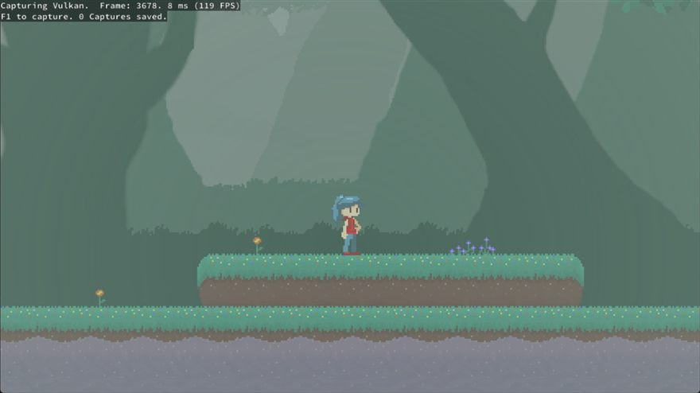
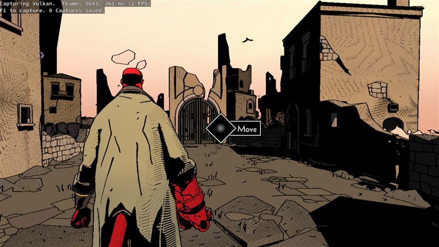

How a PlayStation 5 emulator works
This is the whole thing: the background you need before you can read emulator code, then every layer of KytyPS5 explained with the actual source. It starts from "what is an emulator" and ends at SPIR-V register allocation. Nothing here assumes you have read anything else.
Colour is used for one purpose only in this book: which side of the emulation boundary a thing lives on. Once you internalise that split, most of the architecture explains itself.





Every pixel here went through the whole chain this book describes: PM4 packets parsed by a software command processor, RDNA 2 shaders recompiled to SPIR-V, guest memory tracked by page faults, and the result blitted into an SDL window. Screenshots from the KytyPS5 repository.
Foundations
Eight chapters of background. If you already know x86-64 calling conventions, virtual memory, ELF linking and how a GPU pipeline works, skim to Part II. If any of those is new, read this part properly — the rest of the book assumes it.
What an emulator is
An emulator makes one computer behave like another, so that software built for the second runs on the first. That is the whole idea. Everything else is engineering trade-offs about where you cut.
The simplest possible emulator
Imagine a toy machine with four registers and a handful of instructions. An emulator for it is a loop:
uint8_t memory[65536];
uint32_t reg[4];
uint16_t pc = 0;
for (;;) {
uint8_t opcode = memory[pc++];
switch (opcode) {
case 0x01: { // LOAD reg, imm32
uint8_t r = memory[pc++];
reg[r] = *(uint32_t*)&memory[pc];
pc += 4;
break;
}
case 0x02: { // ADD dst, src
uint8_t d = memory[pc++], s = memory[pc++];
reg[d] += reg[s];
break;
}
case 0xFF: return; // HALT
}
}
That is a real emulator. It is called an interpreter: fetch an instruction, decode it, do what it says, repeat. Every emulator you have heard of started as some version of this loop.
The problem is speed. That C code takes maybe 10–50 host instructions to execute one guest instruction. A 3.5 GHz guest CPU would need a 100 GHz host. So real emulators for modern systems do something cleverer.
The four strategies, from slowest to fastest
| Strategy | How it works | Cost | Used by |
|---|---|---|---|
| Interpretation | Decode and execute one guest instruction at a time, every time. | 10–100× slower than native. Perfectly accurate, trivially debuggable. | Reference implementations; fallback paths; old 8-bit systems where 100× slower is still fast enough. |
| Dynamic recompilation (JIT) | Translate a block of guest instructions into host instructions once, cache the result, then jump into the cached block whenever that address is reached again. | 2–10× slower. Complex: self-modifying code, precise exceptions and flags all become hard. | Nearly every serious console emulator where guest and host CPUs differ — PS2, Switch, GameCube. |
| Native execution | Guest and host share an instruction set, so guest code is simply mapped into memory and jumped to. | 1× — no CPU cost at all. Only possible when the architectures match. | KytyPS5, and every other PS4/PS5 emulator. |
| High-level emulation (HLE) | Not a CPU strategy but a library strategy: instead of running the console's operating system, reimplement what its functions do in native code. | Can be faster than the real console. Accuracy depends entirely on how well each function was reverse-engineered. | KytyPS5 for all system services and the entire GPU. |
Low-level emulation (LLE) simulates the hardware and runs the console's own firmware and libraries on top. Maximum accuracy, terrible speed, and it requires copyrighted system files that users must dump from a console they own.
High-level emulation (HLE) replaces those libraries with reimplementations. Much faster, legally cleaner — no console files needed — but every function you have not implemented is a crash waiting to happen, and subtle behavioural differences produce bugs that look like nothing else.
KytyPS5 is HLE throughout. Its README states that "no external low-level emulation modules are currently required," which is a deliberate design goal, not an accident.
What an emulator must actually reproduce
A CPU is only one of the things a program depends on. To run an unmodified console game you must reproduce all of:
- The instruction set — so the code executes at all.
- The calling convention — so a function's arguments arrive where it expects them.
- The memory layout — so pointers, allocations and alignment assumptions hold.
- The operating system's services — threads, files, memory, timers, networking, audio, input.
- The GPU — including its command format, its register set, its memory layouts and its shader instruction set.
- The timing model — vertical blank, frame pacing, audio clocks. Games are full of code that assumes 60 Hz.
Notice that only the first of those is about "emulating a CPU." For the PS5, the first item is free — and the remaining five are the entire project.
- Guideemudev.org — Getting StartedThe community's entry point. Points at per-system references and the r/EmuDev subreddit, which is where most emulator authors actually ask questions.
- ArticleHow Do Emulators Work? A Deep Dive into Emulator DesignWalks the interpreter → dynamic recompiler → HLE spectrum in more depth than this chapter had room for.
- VideoHow does an emulator work? Building an Atari ST emulator from scratchA whole emulator built on screen for a simple machine. The best way to make the fetch–decode–execute loop concrete before tackling anything modern.
- Codeawesome-emu-resourcesA curated index of emulator development material, organised by system and by topic.
The machine being emulated
You cannot emulate what you do not understand. Here is the PlayStation 5, described in the terms that matter to an emulator author rather than to a shopper.
The hardware
| Component | What it is | Emulation consequence |
|---|---|---|
| CPU | 8-core AMD Zen 2, x86-64, 16 hardware threads, ~3.5 GHz. | Same instruction set as any modern PC. This is the single most important fact in this book. |
| GPU | AMD RDNA 2, 36 compute units, custom. Programmed through a command-packet interface, not a driver API. | Must be modelled in software: packet parser, register file, and a shader compiler from RDNA 2 to SPIR-V. |
| Memory | 16 GB GDDR6, unified — CPU and GPU address the same physical memory. | The hardest problem in the project. A PC has separate GPU memory, so every shared resource becomes a copy that can go stale. |
| Page size | 16 KB, not the 4 KB PCs use. | Guest allocations, alignment and protection all work in 16 KB units; the host works in 4 KB. Every protection change touches four host pages. |
| Storage | Custom NVMe with hardware decompression. | Emulated as ordinary file I/O. Games that assume streaming speeds may behave oddly but rarely break. |
| Audio | "Tempest" 3D audio engine plus a fixed-function decode block (AJM). | AJM takes batched decode jobs, so Kyty parses the job format and routes to FFmpeg / LibAtrac9. |
The software stack
The PS5's operating system is a descendant of FreeBSD. That heritage shows everywhere in the API surface:
libkernel, libSceGnmDriver (graphics), libSceAudioOut, libSceNet, libSceSaveData… Dozens of shared libraries, each exporting hashed symbols.kqueue-style event queues, mmap-style memory, a Unix-like file system.KytyPS5 replaces the middle two layers wholesale with native C++, and models the fourth in software. The top layer — the game — runs untouched.
Prospero is Sony's internal codename for the PS5, and it is the namespace name used throughout Kyty's graphics code (Libs::Graphics::Prospero). AGC is the PS5's low-level graphics API, referred to as Gen5 in the source. GNM was its PS4 predecessor, and some symbol names still carry that lineage.
What a game file actually is
A PS5 title directory contains, at minimum:
MyGame/ ├─ eboot.bin the main executable — a SELF (Signed ELF) ├─ sce_sys/ │ ├─ param.json title ID, version, memory budget, capabilities │ ├─ icon0.png │ └─ … ├─ *.prx / *.sprx optional extra modules shipped with the game └─ (game data files)
Kyty reads param.json for the title ID and the flexible-memory budget, mounts the directory as /app0, then loads eboot.bin.
- ArticleArchitecture of Consoles — Rodrigo CopettiDeep, readable hardware analyses of essentially every console. Read the PlayStation entries to see how the design lineage arrives at the PS5. Widely recommended as the first thing to read before emulating any system.
- VideoConsole Hacking 2016 — "PS4: PC Master Race" (33C3)Hector Martin and fail0verflow on PS4 hardware and how they reverse-engineered it far enough to run Linux with 3D acceleration. The closest thing to a primary source on how this hardware actually differs from a PC. Also on YouTube, with slides.
- Articlefail0verflow blogWrite-ups behind the talks, including the liner notes for each Console Hacking presentation.
Why there is no CPU emulator
Search the entire KytyPS5 repository for an interpreter loop or a JIT compiler and you will find neither. This chapter explains why, and what replaces them.
The instruction sets are the same
A PS5 game is x86-64 machine code. Your PC executes x86-64 machine code. There is nothing to translate. The emulator:
- Allocates memory at the address the executable wants,
- Copies the code segments into it,
- Marks those pages executable,
- Sets up a stack and jumps to the entry point.
From that instruction onwards the CPU is running the game directly, at full speed. The emulator is not "in the loop" at all — it only regains control when the game calls a function the emulator provides, or when the hardware raises a fault.
KytyPS5 is not a simulator that steps through the game. It is a host environment that the game runs inside. It is closer in spirit to Wine — which runs Windows programs on Linux — than to an emulator like Dolphin. Everything the emulator does is reactive: it responds to calls, to page faults, and to command buffers.
What that buys, and what it costs
| Consequence | Detail |
|---|---|
| good Full CPU speed | No translation overhead. CPU-bound games can in principle exceed console performance on a fast PC. |
| good Vastly less code | A competent x86-64 JIT is tens of thousands of lines on its own. Kyty spends that budget on graphics instead. |
| hard No instruction-level control | You cannot trap on a memory access by instrumenting code, because there is no code generation step. Kyty uses hardware page protection and the CPU's own fault mechanism instead — this is why the exception handler is load-bearing. |
| hard Crashes are real crashes | A guest bug corrupts the emulator's own process. There is no sandbox. Hence the elaborate crash dump: faulting module, code bytes, all registers, stack walk. |
| hard Host CPU features must match | If the guest uses an instruction your CPU lacks, it faults. Kyty catches that and emulates the instruction in software — see chapter 18. |
| hard ABI and OS assumptions leak | Guest code assumes System V registers, a working fs segment, 16 KB pages, and a FreeBSD kernel. None of that is true on Windows. Chapters 4, 16 and 19 are about closing those gaps. |
The path a frame actually takes
Before any of the detail, here is the whole system in one animation. Every chapter from 25 onwards is an expansion of one of these eight boxes.
Where the difficulty actually went
Measured in lines of C++ in src/:
Graphics — shader, host_gpu, guest_gpu and presentation together — is about 60,000 lines, roughly half the emulator. The shader recompiler alone is larger than the loader, the kernel and the platform layer combined.
Prerequisite: x86-64 and calling conventions
The instruction sets match; the conventions do not. This chapter is the minimum x86-64 you need, and then the specific mismatch that shapes a surprising amount of KytyPS5.
The registers
x86-64 has sixteen 64-bit general-purpose registers. Their names are historical and inconsistent, which is confusing at first and then stops mattering:
rax rbx rcx rdx the original four, extended to 64-bit rsi rdi "source index" / "destination index" rbp rsp frame pointer / stack pointer r8 r9 r10 r11 added with x86-64 r12 r13 r14 r15 xmm0 … xmm15 128-bit vector registers, used for float arguments too rip instruction pointer (not directly writable) rflags condition flags
Plus segment registers, a leftover from 16-bit days. In 64-bit mode most are ignored, but two survive with a specific job: fs and gs provide a per-thread base address, used to reach thread-local storage. Remember fs — it comes back in chapter 16 and causes real trouble.
What a calling convention is
Machine code has no concept of a "function argument." When you write f(a, b), the compiler must decide: which register or stack slot does a go in? Who cleans up the stack? Which registers may f destroy? A calling convention (or ABI, application binary interface) is the agreed answer.
Two conventions matter here, and they disagree about almost everything:
System V AMD64 — used by the PS5, Linux, macOS
Microsoft x64 — used by Windows
System V passes six integer arguments in registers; Microsoft passes four, and requires the caller to reserve 32 bytes of "shadow space" on the stack even when all arguments fit in registers. The register order is different too — rcx is the fourth argument under System V and the first under Microsoft.
They also differ on which registers a function must preserve. Under System V, rbx rbp r12–r15 are callee-saved. Under Microsoft, that list additionally includes rsi rdi and the upper halves of xmm6–xmm15. A function compiled for one convention and called by the other will silently corrupt registers the caller expected to survive.
How KytyPS5 bridges it
Clang lets you set the convention per function with an attribute. Kyty defines two macros and uses them everywhere the boundary is crossed:
#define KYTY_MS_ABI __attribute__((ms_abi)) #define KYTY_SYSV_ABI __attribute__((sysv_abi))
Any function the guest can call is marked KYTY_SYSV_ABI. The compiler then emits a System V prologue for that one function, while the rest of the emulator is compiled with the platform's native convention:
int KYTY_SYSV_ABI ContentExportInit2(const ContentExportInitParam2* init_param) {
PRINT_NAME();
if (init_param == nullptr) return CONTENT_EXPORT_ERROR_INVALID_PARAM;
...
}
The reverse direction exists too. When the emulator generates machine code that guest code will call — the TLS stubs of chapter 16 — that stub must switch back to the Microsoft convention before calling into C++. You can read the switch happening by hand in Jit::SafeCall:
sub rsp,0x80 make room pushfq save flags push rcx / rdx / r8 / r9 / r10 / r11 / rbx / rdi / rsi mov rbx,rsp and rsp,0xfffffffffffffff0 align stack to 16 bytes sub rsp,0x20 reserve Win64 shadow space movabs rcx,<handler> call rcx mov rsp,rbx restore, pop everything back ... ret
Microsoft's compiler has no sysv_abi attribute. There is no way to write this code in MSVC, so src/CMakeLists.txt rejects cl.exe at configure time and requires clang-cl. This is the single most common first-time build failure.
One more x86-64 detail: variadic functions
Under System V, a variadic function such as printf receives, in al, the number of vector registers used for arguments. That is why the generated import thunk in chapter 17 begins with push rax — preserving al across the resolution call, because the target might be variadic.
It is also why Kyty cannot simply forward a guest printf to the host's vprintf: the argument list layout differs. src/libs/guestPrintf.cpp is 25 KB implementing the format-string interpreter from scratch for exactly this reason.
- SpecSystem V AMD64 psABI — official repositoryThe living standard for the convention the PS5 uses. The register assignment, stack alignment and variadic
alrule described above all come from here. A commonly-cited stable PDF of the earlier draft is also available. - SpecMicrosoft x64 calling conventionThe other half of the mismatch — four register arguments and the mandatory 32-byte shadow space that
Jit::SafeCallhas to reserve by hand. - ReferenceOSDev Wiki — System V ABIA shorter, more approachable summary if the specification itself is heavy going.
Prerequisite: virtual memory and page protection
Page protection is not a side topic in this project — it is the mechanism by which the emulator detects that the game has touched something the GPU cares about. You need to understand it properly.
Addresses are lies
When a program reads address 0x900001000, that is a virtual address. The CPU's memory management unit translates it, through page tables the OS maintains, into a physical address in RAM. The translation happens per page — a fixed-size block, 4 KB on PC, 16 KB on PS5.
Each page table entry carries permission bits: readable, writable, executable. If a program accesses a page in a way the bits forbid, the CPU raises a fault. The OS delivers it to the process as an exception (Windows) or a signal (Linux, macOS).
Reserving address space claims a range of virtual addresses so nothing else can use them, without allocating any physical memory. Committing backs part of that range with real memory.
This split is why an emulator can claim a terabyte of address space up front (see the memory map below) while using only a few gigabytes of RAM. Kyty reserves entire bands and hands out committed pieces from inside them.
The three things Kyty does with protection
sceKernelMprotect, Kyty applies the equivalent host protection so that a genuine guest bug still faults the way it would on console.All three funnel into one function — the exception handler installed by the loader — which is why chapter 18 exists.
The page-size mismatch
The PS5 uses 16 KB pages; PCs use 4 KB. Kyty's guest allocator works in 0x4000-byte units:
constexpr uint64_t GUEST_PAGE_SIZE = 0x4000; program->base_size_aligned = AlignUp(program->base_size, GUEST_PAGE_SIZE);
The consequence is subtle but pervasive: one guest page is four host pages, so any protection change covers four host pages at once. The memory tracker's dirty bits therefore have coarser granularity than the guest might expect, and a write anywhere in a 16 KB region marks the whole thing dirty. That is correct but conservative — it can cause more uploading than strictly necessary.
The address map Kyty imposes
Kyty does not let the host OS choose where things go. It divides the address space into bands and enforces them:
macOS shifts these ranges and pins them with linker flags — -segaddr SYSTEM_RESERVED,0x7ffffc000 -segaddr USER_AREA,0x7000000000 — so the dynamic loader can never place a system library where the guest needs to allocate. src/CMakeLists.txt:323
Console software hard-codes addresses and assumes allocations land in particular ranges. It also passes pointers to the GPU, which in Kyty means those pointers must be distinguishable from emulator pointers. Fixing the bands makes both problems tractable: a value beginning 0x9… is guest module code, a value beginning 0x1… is guest heap, and anything above 0x7000_0000_0000 is the emulator itself.
Prerequisite: ELF and dynamic linking
A game is a file. Something has to turn that file into a running program. On Linux that job belongs to ld.so; in KytyPS5 it belongs to RuntimeLinker. To read that code you need to know what a dynamic linker does.
The ELF layout
ELF — Executable and Linkable Format — is the Unix executable format, and the PS5 uses it. An ELF file has two overlapping views:
| View | Described by | Used by |
|---|---|---|
Sections (.text, .data, .rodata…) | Section headers | The linker at build time. Often stripped from shipped binaries. |
Segments (PT_LOAD, PT_DYNAMIC, PT_TLS…) | Program headers | The loader at run time. This is the view Kyty cares about. |
A program header entry says: "take p_filesz bytes at file offset p_offset, place them at virtual address p_vaddr, zero-fill up to p_memsz, and apply these permissions." Loading is essentially a loop over those entries.
struct Elf64_Phdr {
Elf64_Word p_type; PT_LOAD, PT_DYNAMIC, PT_TLS, …
Elf64_Word p_flags; PF_R | PF_W | PF_X
Elf64_Off p_offset; where in the file
Elf64_Addr p_vaddr; where in memory
Elf64_Addr p_paddr; reserved
Elf64_Xword p_filesz; bytes present in the file
Elf64_Xword p_memsz; bytes needed in memory (remainder is zeroed)
Elf64_Xword p_align;
};
Why relocation exists
A shared library does not know where it will be loaded. It is compiled position-independently, and every absolute address inside it is left as a placeholder. The loader must go back and fix them. Each fix is a relocation: a record saying "at offset X, write value Y."
Four relocation types cover almost everything Kyty sees:
| Type | Meaning | Computation |
|---|---|---|
R_X86_64_RELATIVE | An internal pointer that just needs the load bias added. | *where = base + addend |
R_X86_64_64 | A 64-bit absolute reference to a symbol. | *where = symbol + addend |
R_X86_64_GLOB_DAT | A Global Offset Table entry for a data symbol. | *where = symbol |
R_X86_64_JUMP_SLOT | A Procedure Linkage Table entry for a function. | *where = symbol |
R_X86_64_DTPMOD64 | Thread-local storage: which module owns this variable. | module ID |
The Global Offset Table is an array of pointers. Instead of embedding an absolute address in code, the compiler emits "load the pointer from GOT slot 12, then use it." The loader fills the GOT, so the code itself never needs patching.
The Procedure Linkage Table is the same idea for calls. A call to an external function jumps to a small PLT stub, which jumps to whatever address the GOT holds.
This is the hook KytyPS5 uses. When the loader writes the address of its own C++ function into a GOT slot, every subsequent guest call to that "console function" lands in the emulator instead. No patching of the game's code is needed.
Symbols, and why the PS5's are unreadable
Normally a dynamic symbol has a name: printf, malloc. PS5 modules instead export NIDs — an 11-character encoding of a hash of the original name — qualified by the library and module they belong to:
lUwEK9UwLNo#libSceGnmDriver#libSceGnmDriver └─ symbol ─┘ └─── library ───┘ └──── module ────┘
Kyty stores its HLE implementations under the same key, so resolution is a dictionary lookup. You will meet the exact mechanism in chapters 15 and 22.
Thread-local storage in one paragraph
A variable declared thread_local needs a different copy per thread. The usual implementation gives each thread a block of memory and a pointer to it, reachable through a segment register — fs on x86-64 Linux and FreeBSD. Code that reads a thread-local reads fs:[offset].
Windows uses fs for its own purposes, so guest code doing this reads the wrong memory and usually faults. Chapter 16 is entirely about the fix.
- ArticleEli Bendersky — Position Independent Code in shared librariesThe clearest explanation anywhere of why the GOT and PLT exist and how they work, built up from disassembly. If one link in this book is worth reading before continuing, it is this one — the GOT is the exact hook KytyPS5's entire HLE design hangs on.
- Article…and the x64 follow-upThe same material for x86-64, which is the architecture that actually matters here — RIP-relative addressing changes the picture noticeably.
- SpecELF specification (generic ABI)The section and segment structures of chapter 13, minus Sony's additions. Worth having open when reading
src/loader/elf.h.
Prerequisite: how a GPU actually draws
Half of KytyPS5 is graphics, and the graphics code assumes you know how the hardware works — not how an API looks. This chapter covers the hardware model.
The pipeline
To draw a triangle, a GPU runs a fixed sequence of stages. Some are programmable (you supply a shader), some are fixed-function (configured by registers):
Separately, compute shaders bypass all of this: they run a grid of threads doing arbitrary work, used for physics, culling, post-processing and — in Kyty — for detiling textures.
How shaders actually execute: waves and lanes
This is the part that trips people up, and it is essential for chapter 30.
A GPU does not run one shader invocation at a time. It runs a wave — 32 or 64 invocations — in lockstep on one instruction stream. Each invocation is a lane. One instruction, executed simultaneously for all lanes on their own data.
So what happens at an if? The lanes cannot diverge; there is only one program counter. Instead the hardware keeps an execution mask: a 64-bit register where bit n enables lane n. Branching is implemented by masking:
// if (x > 0) { A } else { B }
v_cmp_gt_f32 vcc, v0, 0 compare in every lane → 64-bit result in vcc
s_and_saveexec_b64 s[0:1], vcc enable only lanes where the test passed
… code for A — inactive lanes execute it but discard results …
s_andn2_b64 exec, s[0:1], exec flip to the other lanes
… code for B …
s_mov_b64 exec, s[0:1] restore
Both branches are executed; results are simply thrown away for disabled lanes. This is why GPU code is fast when threads agree and slow when they diverge — and, more importantly for us, why GPU control flow is data manipulation rather than program structure. Recovering structure from it is the hardest job the shader recompiler has.
RDNA 2 has two register files. VGPRs (vector registers) hold a different value per lane — a pixel's colour, a vertex's position. SGPRs (scalar registers) hold one value shared by the whole wave — a loop counter, a base address, a resource descriptor.
The distinction matters because resource descriptors always live in SGPRs. Working out what a shader's SGPRs contain is exactly what lets Kyty know which texture to bind.
Descriptors: how a shader reaches a texture
In a PC API you call BindTexture(slot, texture). On RDNA 2 there are no slots. A texture is described by a descriptor — a packed block of bits holding its address, format, size, tiling and swizzle — and the shader simply has that block in its registers, or loads it from memory itself.
AMD calls these "sharps":
| Name | Size | Describes |
|---|---|---|
| V# (buffer resource) | 4 dwords / 128 bits | Base address, stride, record count, data format, component swizzle. |
| T# (image resource) | 8 dwords / 256 bits | Base address, format, width, height, depth, mip levels, tiling mode, array slices, DCC/HTile metadata address. |
| S# (sampler) | 4 dwords / 128 bits | Filter modes, clamp modes, anisotropy, LOD range and bias, border colour. |
You can decode real ones here. The bit layouts are taken directly from Kyty's shaderBindings.h:
Every accessor here corresponds to a real method — ShaderBufferResource::Base48(), ShaderTextureResource::Width5(), ShaderSamplerResource::XyMagFilter() and so on. src/graphics/shader/shaderBindings.h
Tiling: textures are not stored in rows
A linear image stores pixel (x, y) at base + y*pitch + x*bpp. GPUs do not do this, because a shader sampling a texture reads a 2D neighbourhood, and a linear layout puts vertically adjacent pixels far apart in memory.
Instead pixels are interleaved into small blocks so that a 2D neighbourhood lands in one cache line. AMD has several schemes — 256 B, 4 KB, 64 KB, plus special layouts for render targets, depth buffers and partially-resident textures — each with its own swizzle function and alignment rules that vary with bytes-per-pixel and mip level.
Guest memory holds tiled data. Vulkan wants either linear data or its own opaque layout. Converting between them is chapter 29.
- ArticleFabian Giesen — A trip through the Graphics PipelineA thirteen-part series on what the hardware actually does between a draw call and a pixel. Slightly older than RDNA 2, but the concepts — command processors, wave scheduling, rasterisation, depth and colour compression, tiling — are exactly the ones this book keeps returning to. The single best background reading for Part V.
- VideoBranch Education — How do Graphics Cards Work? Exploring GPU ArchitectureHighly detailed 3D animations of a real GPU die. The section on single-instruction-multiple-data execution and thread architecture is the clearest visual explanation of waves and lanes you will find.
- SlidesKayvon Fatahalian — How a GPU Works (CMU 15-462)Builds a GPU from first principles: start with a simple core, then add SIMD lanes, then multithreading, and watch a shader core emerge. Pairs with his "A Closer Look at GPUs" paper.
- SpecAMD RDNA 2 Instruction Set Architecture Reference GuideThe 291-page manual for the exact shader ISA the recompiler consumes. The README names this as the primary reference for shader work — chapter 30 is not really workable without it. Announced here; more architecture documentation at GPUOpen.
Prerequisite: Vulkan and SPIR-V
Kyty targets Vulkan 1.3. You do not need to be able to write a Vulkan renderer to read this book, but you need the vocabulary and one key idea: Vulkan is explicit about everything, which is both why it suits an emulator and why it makes some things awkward.
The objects you will meet
| Vulkan object | What it is | Where Kyty creates it |
|---|---|---|
VkInstance / VkDevice | The library connection and a logical GPU. | vulkanWindow.cpp, stored in VulkanInstance. |
VkCommandBuffer | A recorded list of GPU commands. Nothing executes until submitted. | CommandScheduler keeps eight in rotation. |
VkPipeline | A fully-baked configuration: both shaders plus every fixed-function setting — blend, depth, cull, viewport, attachment formats. | PipelineCache, keyed on shader IDs and a packed state struct. |
VkDescriptorSet | A bundle of resource bindings handed to a pipeline. | DescriptorCache, recycled after the fence signals. |
VkImage / VkBuffer | GPU memory with a format and usage. | TextureCache, BufferCache. |
VkFence / timeline VkSemaphore | CPU–GPU and GPU–GPU synchronisation. A timeline semaphore carries a monotonically increasing counter. | MasterSemaphore. |
In OpenGL the driver guessed what you meant, tracked state changes and re-compiled shaders behind your back. Vulkan removes all of that: you declare everything up front and manage synchronisation yourself.
For an emulator this is exactly right, because the guest has already declared everything — the PM4 register state is a complete pipeline description. Kyty's job is translation, not inference. The awkward part is the reverse: Vulkan bakes state into immutable pipeline objects, whereas the guest changes registers freely, so Kyty must detect which changes actually require a new pipeline. That is what the pipeline cache key is for.
SPIR-V, and why it is stricter than machine code
Vulkan does not accept GLSL or HLSL. It accepts SPIR-V: a binary intermediate language of 32-bit words. Every value has a declared type, every capability used must be requested, and — critically — control flow must be structured.
Structured means: every conditional branch declares in advance where its two paths reconverge (the merge block), and every loop declares both its merge block and its continue target. In SPIR-V assembly:
OpSelectionMerge %merge None "these branches rejoin at %merge" OpBranchConditional %cond %then %else %then = OpLabel ... OpBranch %merge %else = OpLabel ... OpBranch %merge %merge = OpLabel
Compare that with the RDNA 2 snippet in chapter 7, which had no merge point at all — just mask manipulation and fall-through. Reconstructing the declarations SPIR-V demands, from code that never had them, is the single hardest pass in the recompiler, and it is allowed to fail: there is a documented fallback for shaders whose control flow cannot be structured.
A worked mapping
To make the shape of the translation concrete, here is one line of the same operation at four levels:
| Level | Representation |
|---|---|
| Original shader source | float d = dot(a, b); |
| RDNA 2 machine code | v_mul_f32 v4, v0, v3 then v_fma_f32 v4, v1, v2, v4 … |
| Kyty decoder output | Instruction{ family: VOP2, opcode: VMulF32, dst: v4, src0: v0, src1: v3 } |
| Kyty IR | Opcode::MulF32 with typed operands and a program counter |
| SPIR-V | %r = OpFMul %float %a %b |
Multiply is easy. The work is in the thousand cases that are not: packed 16-bit maths, saturating conversions, cross-lane shuffles, image sampling with a dozen modifier bits, buffer loads that need bounds checking SPIR-V does not provide for free.
Kyty links SPIRV-Tools, so it can run spirv-val on everything it emits (--shader-validation true) and spirv-opt to optimise (--shader-optimization-type). Turning validation on is the fastest way to catch a malformed module before the GPU driver does something unpredictable with it.
- TutorialVulkan TutorialThe standard first Vulkan tutorial: builds a triangle from nothing, covering instance, device, swapchain, pipeline and command buffers. You do not need to finish it to read this book, but working through the pipeline and command-buffer chapters makes chapter 31 far more legible.
- TutorialVulkan Guide (vkguide.dev)A more practical, engine-shaped take on the same material — closer to how a renderer is actually structured. Its Great Resources page is a good onward index.
- HubKhronos — Learn VulkanThe official starting point, including the Khronos-maintained samples and tutorials.
- SpecSPIR-V SpecificationRead section 2.11, "Structured Control Flow", before chapter 30. It defines
OpSelectionMergeandOpLoopMergeand the dominance rules that make the structurisation pass necessary — and that make it able to fail. - PaperAn Introduction to SPIR-VA short white paper on what SPIR-V is and why it looks the way it does. Much gentler than the specification.
- CodeSPIRV-ToolsThe validator and optimiser Kyty links against.
spirv-disfrom this repository is what you use to read a dumped module as text.
The skeleton
What the project is made of, how it is built, and what happens between double-clicking the executable and the game's first instruction.
Repository layout
Nine directories under src/, plus third-party dependencies and tests. Here is what lives where and, more usefully, what each directory is responsible for.
KytyPS5/ ├─ src/ CMake source root — not the repo root │ ├─ main.cpp argument parsing, 285 lines │ ├─ emulator.cpp the spine: init, mount, load, execute — 215 lines │ ├─ CMakeLists.txt targets, compiler checks, test executables │ ├─ common/ platform abstraction (49 files, 6,430 lines) │ ├─ loader/ ELF/SELF loading and linking (15 files, 4,896) │ ├─ kernel/ memory, pthreads, files, events (14 files, 11,197) │ ├─ libs/ HLE system libraries (58 files, 38,055) │ ├─ graphics/ │ │ ├─ guest_gpu/ PM4, registers, tiling (14 files, 10,051) │ │ ├─ shader/ RDNA 2 → SPIR-V (63 files, 26,486) │ │ ├─ host_gpu/ Vulkan backend (90 files, 18,572) │ │ └─ presentation/ window, swapchain, flip (10 files, 4,550) │ └─ launcher/ optional Qt front end (20 files, 2,960) ├─ 3rdparty/ 17 submodules ├─ tests/ 12 standalone test executables (28,872 lines) └─ docs/ screenshots
Responsibilities
| Directory | Side | Owns |
|---|---|---|
common/ | host | Everything OS-specific, behind one interface: virtual memory (sysWindowsVirtual / sysLinuxVirtual), file I/O, threads, timers, exception handling, logging, the singleton and subsystem frameworks, string and date utilities. |
loader/ | kyty | Parsing SELF/ELF, mapping segments, patching instructions, applying relocations, resolving NIDs, generating stubs, installing the exception handler, applying JSON game patches. |
kernel/ | kyty | The PS5 kernel services too central for libs/: the whole memory manager (141 KB), the pthread implementation (131 KB), the file system, event queues, semaphores, event flags. |
libs/ | kyty | User-space module reimplementations — audio, network, fonts, save data, video, dialogs, JSON, PNG, trophies, and the AGC graphics driver that builds PM4. |
graphics/guest_gpu/ | guest | The PS5 GPU's own side: PM4 packet definitions and parsing, the hardware register file, the command-processor state machine, tiling arithmetic. |
graphics/shader/ | kyty | A compiler. Decoder, control-flow graph, IR, dataflow analyses, resource tracking, SPIR-V emitter. |
graphics/host_gpu/ | host | Vulkan: instance and device setup, command scheduling, pipelines, descriptors, and the five caches that map guest memory to Vulkan objects. |
graphics/presentation/ | host | SDL2 window, Vulkan swapchain, the VideoOut flip model, virtual vertical blank, RenderDoc integration. |
launcher/ | host | Qt 6 GUI. Scans folders for eboot.bin, edits per-title settings, shows compatibility data and trophies, launches kyty_emulator with the right flags. Touches no emulation code at all. |
The largest files, and why
| Size | File | Why it is big |
|---|---|---|
| 215 KB | libs/agcRegisterDefaults.inc | A generated table of the values the real graphics driver writes at context reset. Games only set registers they change, so the defaults must match exactly. |
| 174 KB | guest_gpu/…/pm4Handlers.cpp | One handler function per PM4 opcode and per hardware register range. |
| 141 KB | kernel/memory.cpp | Direct, flexible and pooled memory, plus page attributes, naming, batch operations and PRT apertures. |
| 141 KB | libs/agc.cpp | Hundreds of AGC command-buffer builder functions. |
| 132 KB | shader/…/spirvEmitterAluOps.cpp | Every arithmetic IR opcode lowered to SPIR-V, including all the packed and saturating variants. |
| 131 KB | kernel/pthread.cpp | A complete pthread implementation with FreeBSD semantics. |
Build system and dependencies
CMake plus Ninja plus Clang. The constraints are unusual enough to be worth explaining rather than just listing.
Configuring
# Windows — from an x64 Native Tools Command Prompt for VS 2022
cmake -S src -B _Build/windows -G Ninja -DCMAKE_BUILD_TYPE=Release ^
-DCMAKE_C_COMPILER=clang-cl -DCMAKE_CXX_COMPILER=clang-cl ^
-DCMAKE_PREFIX_PATH="C:/Qt/6.x.x/msvc2022_64"
cmake --build _Build/windows --target kyty_emulator # emulator only
cmake --build _Build/windows --target launcher # + Qt front end
cmake --install _Build/windows --prefix _Build/windows/install
# Linux
sudo apt-get install --no-install-recommends \
clang lld ninja-build cmake git glslang-tools \
libgl1-mesa-dev libx11-dev libxcursor-dev libxext-dev libxfixes-dev \
libxi-dev libxrandr-dev libxss-dev libxkbcommon-dev \
libasound2-dev libpulse-dev libudev-dev libdbus-1-dev libwayland-dev wayland-protocols
cmake -S src -B _Build/linux -G Ninja -DCMAKE_BUILD_TYPE=Release \
-DCMAKE_C_COMPILER=clang -DCMAKE_CXX_COMPILER=clang++ \
-DCMAKE_PREFIX_PATH="$Qt6_DIR"
The source root is src/, not the repository root. cmake -S src.
MSVC is rejected. The project needs __attribute__((sysv_abi)), so clang-cl is required on Windows. This is checked at configure time.
The audio and input packages are not optional on Linux. Without the ALSA, PulseAudio, udev and Wayland development packages, the bundled SDL2 silently configures itself without those backends and the resulting build has no sound and no gamepad hotplug.
macOS is an unusual case
macOS builds target x86-64 and run under Rosetta 2 on Apple Silicon. That is not a compromise — it is required. The PS5's code is x86-64, and Kyty executes it natively, so the emulator must itself be an x86-64 process for the guest code to run inside it. The guest's instructions then go through the same Rosetta translation as the emulator's own.
Vulkan comes from MoltenVK, which implements it over Metal. The build re-signs the binary with JIT entitlements, because generating and executing code (the stubs of chapters 16–17) requires them under the hardened runtime.
Dependencies
| Library | Role |
|---|---|
Vulkan-Headers | API declarations. Vulkan is loaded dynamically, so no SDK is needed to build. |
VulkanMemoryAllocator | Sub-allocates GPU memory. Vulkan's raw allocation is too coarse to use directly. |
SPIRV-Headers, SPIRV-Tools | Emission, validation (spirv-val) and optimisation (spirv-opt) of recompiled shaders. |
SDL2 | Window, keyboard, mouse, gamepad, and the Vulkan surface. Statically linked. |
ffmpeg-core | Video decode for AVPlayer; AAC and MP3 for the AJM audio block. |
LibAtrac9 | Sony's ATRAC9 audio codec, which FFmpeg does not cover. |
fmt, spdlog | Formatting and logging. |
nlohmann_json | param.json and the game-patch format. |
magic_enum | Enum reflection — this is why CLI flags accept enumerator names directly. |
xxHash | Fast hashing for shader and pipeline cache keys. |
tracy | Frame profiler, enabled with --profiler-direction Network. |
stb, cpuinfo, winpthread | Image decode, CPU feature detection, pthreads on Windows. |
Subsystems and configuration
Kyty has no dependency-injection framework and no service locator. It has two mechanisms — a singleton template and a dependency-ordered subsystem list — and they account for essentially all of its lifetime management.
The subsystem contract
A subsystem declares itself with a macro that generates a class with four virtual methods:
#define KYTY_SUBSYSTEM_DEFINE(s) \
class s##Subsystem: public Common::Subsystem { \
public: \
static Subsystem* Instance() { \
return Common::Singleton<s##Subsystem>::Instance(); \
} \
const char* Id() { return #s; } \
void Init(Common::SubsystemsList* parent); \
void Destroy(Common::SubsystemsList* parent); \
void UnexpectedShutdown(Common::SubsystemsList* parent); \
};
UnexpectedShutdown is the one worth noticing. When the guest crashes, the normal teardown path never runs — but the Vulkan device still has to be destroyed, files closed, threads stopped. That method is the abnormal-exit path.
Dependency ordering
Rather than a hand-maintained init order, each subsystem is registered with its dependencies and the list topologically sorts them:
slist->Add(audio, {core, log, pthread, memory});
slist->Add(controller, {core, log, config});
slist->Add(file_system, {core, log, pthread});
slist->Add(graphics, {core, log, pthread, memory, config, profiler, controller});
slist->Add(memory, {core, log});
slist->Add(network, {core, log, pthread});
slist->Add(profiler, {core, config});
slist->Add(pthread, {core, log, timer});
slist->Add(timer, {core, log});
slist->InitAll(true);
Graphics depends on six other subsystems, which is a fair summary of the project. Note also that this is the third InitAll call — config and logging are brought up in two earlier passes, because everything else logs during its own initialisation.
Configuration is command-line only
There is exactly one configuration source: the argument vector. No config file, no registry, no environment variables. ConfigOptions is the complete set of knobs:
struct ConfigOptions {
uint32_t screen_width = 1280;
uint32_t screen_height = 720;
uint32_t vblank_frequency = 60;
bool vulkan_validation_enabled = false;
bool shader_validation_enabled = false;
ShaderOptimizationType shader_optimization_type = ShaderOptimizationType::None;
ShaderLogDirection shader_log_direction = ShaderLogDirection::Silent;
std::filesystem::path shader_log_folder = "_Shaders";
bool command_buffer_dump_enabled = false;
std::filesystem::path command_buffer_dump_folder = "_Buffers";
bool graphics_debug_dump_enabled = false;
OutputDirection printf_direction = OutputDirection::Console;
std::filesystem::path printf_output_file = "_kyty.txt";
ProfilerDirection profiler_direction = ProfilerDirection::None;
bool spirv_debug_printf_enabled = false;
bool renderdoc_enabled = false;
bool ngg_rectlist_draw_enabled = true;
bool readback_linear_images = false;
};
Enum-valued flags are parsed with magic_enum, so the accepted strings are literally the enumerator names — --shader-log-direction File works because ShaderLogDirection::File exists:
template <typename E>
static bool ParseEnum(const std::string& value, E& out) {
auto enum_value = magic_enum::enum_cast<E>(value.c_str());
if (!enum_value.has_value()) return false;
out = enum_value.value();
return true;
}
It does not share state with the emulator at all. It stores per-title settings, then builds a command line and spawns kyty_emulator. If you are debugging, skip it entirely and run the emulator directly.
The boot sequence
Eleven steps between launching the executable and the game's own code running. Several exist for reasons that are not obvious, so each step below states why it is where it is.
The whole thing as code
Emulator::Run is short enough to read in full, and it is the boot sequence:
void Run(const RunOptions& options) {
if (options.app0_dir.empty()) EXIT("app0 directory is required\n");
if (options.elf.empty()) EXIT("ELF is required\n");
const auto param_json = options.app0_dir / "sce_sys" / "param.json";
Init(options.config, param_json); // subsystems, in dependency order
ClearDebugTextureFolder();
PrintSystemInfo();
int ok = atexit(KytyClose);
EXIT_NOT_IMPLEMENTED(ok != 0);
Libs::LibKernel::FileSystem::Mount(options.app0_dir, "/app0");
Libs::LibKernel::FileSystem::Mount(options.app0_dir, "/hostapp");
MountSandboxDirs(); // /download0, /temp0, /temp
auto* rt = Common::Singleton<Loader::RuntimeLinker>::Instance();
Libs::InitAll(rt->Symbols()); // register every HLE NID
LoadElf(options.elf); // map eboot.bin into guest memory
Execute(options.game_patch); // spawn guest thread, run window loop
}
Two threads leave Execute
static void Execute(const std::filesystem::path& game_patch) {
auto patch_path = game_patch;
Common::Thread guest_thread(
[](void* param) {
auto* rt = Common::Singleton<Loader::RuntimeLinker>::Instance();
rt->Execute(*static_cast<const std::filesystem::path*>(param));
},
&patch_path);
Libs::Graphics::WindowRun(); // main thread — never returns
std::quick_exit(0);
}
The main thread becomes the window and input loop; the game gets a spawned thread. This is required — macOS and Windows both insist that window creation and event pumping happen on the process's first thread — and it has a useful side effect: a hung game does not freeze the window.
And then the guest thread
void RuntimeLinker::Execute(const std::filesystem::path& game_patch) {
Libs::LibKernel::PthreadInitSelfForMainThread();
auto* main_stack_top = Libs::LibKernel::PthreadCreateMainGuestStack();
#if KYTY_PLATFORM == KYTY_PLATFORM_WINDOWS
// Guest code has no Windows stack probes and may jump over the guard page.
size_t expanded_size = 0;
while (expanded_size < static_cast<size_t>(768) * 1024) {
sys_dbg_stack_info_t stack {};
SysStackUsage(stack);
*reinterpret_cast<uint32_t*>(stack.guard_addr) = 0; // force commit
expanded_size += stack.guard_size;
}
#endif
PreloadAdjacentPrograms(); // any .prx next to the executable
RelocateAll(); // resolve every import in every module
if (!game_patch.empty()) GamePatch::Apply(game_patch, m_programs.front());
StartAllModules(); // run module initialisers
if (auto entry = GetEntry(); entry != 0) {
auto* params = reinterpret_cast<EntryParams*>(
(reinterpret_cast<uintptr_t>(main_stack_top) - 0x100u) & ~static_cast<uintptr_t>(0x0f));
std::memset(params, 0, sizeof(EntryParams));
params->argc = 1;
params->argv[0] = "KytyEmu";
RunEntry(entry, params, ProgramExitHandler, ...); // never returns normally
}
}
Windows commits thread stacks lazily with a guard page: touching it faults, the OS commits another page and moves the guard down. This only works if code touches the stack in order, which is why MSVC emits __chkstk probes for large stack frames.
PS5 code, compiled for FreeBSD, has no such probes. A function with a large local array can write past the guard page, and Windows will then treat that as a real stack overflow and terminate the process. Module initialisers also run on the host stack before the guest stack is in use.
So Kyty walks the guard page down 768 KB by hand before any guest code runs, forcing the whole region to commit up front.
Once RunEntry jumps, the CPU is executing the game. Everything the emulator does from then on is reactive: it responds to function calls, to page faults, and to submitted command buffers.
Running guest code
The loader, the memory manager and the kernel layer. This is where a file becomes a process, and where the awkward differences between FreeBSD-on-a-console and Windows-on-a-PC get closed one at a time.
SELF and ELF in detail
Sony's executable format is standard ELF64 wrapped in a container, with a set of custom type and tag values bolted on. Here is the complete set Kyty understands.
The SELF container
eboot.bin starts with a small header describing compressed or encrypted segments, followed by the ELF proper:
struct SelfHeader {
uint8_t ident[12];
uint16_t size1;
uint16_t size2;
uint64_t file_size;
uint16_t segments_num;
uint16_t unknown;
uint32_t pad;
};
struct SelfSegment {
uint64_t type;
uint64_t offset;
uint64_t compressed_size;
uint64_t decompressed_size;
};
Elf64::IsSelf() tests for the container; IsNextGen() distinguishes PS5-era files from PS4-era ones. Retail files are encrypted, which is why the project cannot and does not distribute games — you supply files you already have the right to use.
The ELF header values that are not standard
| Field | Value | Meaning |
|---|---|---|
e_ident[EI_OSABI] | ELFOSABI_FREEBSD = 9 | Confirms the FreeBSD heritage. |
e_machine | EM_X86_64 = 62 | x86-64, as expected. |
e_type | ET_DYNEXEC = 0xfe10 | Sony-specific: a main executable that is nevertheless position-independent. |
e_type | ET_DYNAMIC = 0xfe18 | Sony-specific: a shared module. |
Custom segment types
p_type | Value | Contents |
|---|---|---|
PT_LOAD | 1 | Standard: map this into memory. |
PT_DYNAMIC | 2 | Standard: the dynamic tag array. |
PT_TLS | 7 | Standard: the thread-local storage template image. |
PT_OS_DYNLIBDATA | 0x61000000 | Sony: a blob holding the symbol table, string table and relocation tables. The dynamic tags below index into this blob, not into the file. |
PT_OS_PROCPARAM | 0x61000001 | Sony: the process-parameter block the runtime reads at start-up. |
PT_OS_RELRO | 0x61000010 | Sony: data that becomes read-only after relocation. Kyty maps it like PT_LOAD. |
Custom dynamic tags
Standard ELF has DT_SYMTAB, DT_STRTAB, DT_RELA and so on. Sony duplicated the whole set in the OS-specific range so they can refer into PT_OS_DYNLIBDATA:
| Tag | Value | Purpose |
|---|---|---|
DT_OS_SYMTAB / SYMTABSZ | 0x61000039 / 0x6100003f | Dynamic symbol table and its size. |
DT_OS_STRTAB / STRSZ | 0x61000035 / 0x61000037 | String table holding NIDs and library names. |
DT_OS_RELA / RELASZ / RELAENT | 0x6100002f / 31 / 33 | General relocations. |
DT_OS_JMPREL / PLTRELSZ | 0x61000029 / 0x6100002d | PLT relocations — the function imports. |
DT_OS_PLTGOT | 0x61000027 | Address of the Global Offset Table. |
DT_OS_MODULE_INFO | 0x6100000d | Name and version of a module this file exports. |
DT_OS_NEEDED_MODULE | 0x6100000f | Name and version of a module this file imports. |
DT_OS_EXPORT_LIB / IMPORT_LIB | 0x61000013 / 0x61000015 | Library names and versions on each side. |
DT_OS_FINGERPRINT | 0x61000007 | Build identifier. |
The module and library tables matter more than they look. A NID is only unique within a library, so resolution needs all three parts. GetDynModules and GetDynLibs unpack these into DynamicInfo:
struct DynamicInfo {
char* str_table; uint64_t str_table_size;
Elf64_Sym* symbol_table; uint64_t symbol_table_total_size;
Elf64_Rela* rela_table; uint64_t rela_table_total_size;
Elf64_Rela* jmprela_table; uint64_t jmprela_table_size;
uint64_t init_vaddr, fini_vaddr;
uint64_t init_array_vaddr, init_array_size;
uint64_t pltgot_vaddr;
std::vector<const char*> needed;
std::vector<ModuleId> export_modules, import_modules;
std::vector<LibraryId> export_libs, import_libs;
};
The encoded identifiers
Module and library identifiers in a NID string are not names — they are small integers encoded in a base64-like alphabet. EncodeId64 converts an index into the one- or two-character form, and resolution then looks that up in the file's own import tables to find the real name and version. This is why the same NID string can mean different things in two different modules.
Mapping a program into memory
One function does the whole job. It is worth reading line by line because almost every design decision in the loader is visible in it.
Deciding how much space to reserve
The mapped size is the highest address any loadable segment reaches, rounded up to a guest page, plus room for the generated TLS handler:
static uint64_t CalcBaseSize(const Elf64_Ehdr* ehdr, const Elf64_Phdr* phdr) {
uint64_t base_size = 0;
for (Elf64_Half i = 0; i < ehdr->e_phnum; i++) {
if (phdr[i].p_memsz != 0 &&
(phdr[i].p_type == PT_LOAD || phdr[i].p_type == PT_OS_RELRO)) {
uint64_t last_addr = phdr[i].p_vaddr + GetAlignedSize(phdr + i);
if (last_addr > base_size) base_size = last_addr;
}
}
return base_size;
}
program->base_size = CalcBaseSize(ehdr, phdr);
program->base_size_aligned = AlignUp(program->base_size, 0x4000); // 16 KB guest page
uint64_t tls_handler_size = is_shared ? 0 : Jit::SafeCall::GetSize();
program->mapped_size = program->base_size_aligned + tls_handler_size;
program->base_vaddr = Libs::LibKernel::Memory::AllocateProgramMemory(
g_desired_base_addr, program->mapped_size,
Common::VirtualMemory::Mode::ExecuteReadWrite,
Common::PathToString(program->file_name.filename()).c_str());
g_desired_base_addr += CODE_BASE_INCR * (1 + program->mapped_size / CODE_BASE_INCR);
Note that the region is initially mapped ExecuteReadWrite. Correct protection is applied per segment afterwards — the loader needs write access to copy data in and to patch instructions, before locking things down.
The layout constants
constexpr uint64_t SYSTEM_RESERVED = 0x800000000u; constexpr uint64_t CODE_BASE_INCR = 0x010000000u; // 256 MB between modules constexpr uint64_t CODE_BASE_OFFSET = 0x100000000u; static uint64_t g_desired_base_addr = SYSTEM_RESERVED + CODE_BASE_OFFSET; // 0x900000000
So the main executable lands at 0x900000000, the next module at 0x910000000, and so on. Fixed and predictable — which is what lets the crash handler walk a guest stack by range-checking return addresses.
Solid arrows are direct copies: file bytes land at p_vaddr + base_vaddr. Dashed arrows are recorded rather than copied — the TLS segment is a template each thread copies from later, and the process-parameter block is just an address the runtime reads. The .data segment shows the filesz < memsz case: the difference is zero-filled, which is how .bss arrives.
The segment loop
for (Elf64_Half i = 0; i < ehdr->e_phnum; i++) {
if (phdr[i].p_memsz != 0 &&
(phdr[i].p_type == PT_LOAD || phdr[i].p_type == PT_OS_RELRO)) {
uint64_t segment_addr = phdr[i].p_vaddr + program->base_vaddr;
uint64_t segment_file_size = phdr[i].p_filesz;
uint64_t segment_memory_size = GetAlignedSize(phdr + i);
auto mode = GetMode(phdr[i].p_flags);
program->elf->LoadSegment(segment_addr, phdr[i].p_offset, segment_file_size);
bool skip_protect = (phdr[i].p_type == PT_LOAD && is_next_gen &&
mode == Common::VirtualMemory::Mode::NoAccess);
if (Common::VirtualMemory::IsExecute(mode)) {
PatchProgram(program, segment_addr, segment_memory_size); // chapter 16
}
if (!skip_protect) {
Memory::SetProgramMemoryProtection(segment_addr, segment_memory_size, mode);
if (Common::VirtualMemory::IsExecute(mode)) {
Common::VirtualMemory::FlushInstructionCache(segment_addr, segment_memory_size);
}
}
}
if (phdr[i].p_type == PT_TLS) {
program->tls.image_vaddr = phdr[i].p_vaddr + program->base_vaddr;
program->tls.init_size = std::min(phdr[i].p_filesz, GetAlignedSize(phdr + i));
program->tls.image_size = GetAlignedSize(phdr + i);
program->tls.tcb_offset = program->tls.image_size;
}
if (phdr[i].p_type == PT_OS_PROCPARAM) {
program->proc_param_vaddr = phdr[i].p_vaddr + program->base_vaddr;
}
}
Three details worth extracting:
- Patch before protect. The rewriting in chapter 16 needs write access, and the instruction cache flush must happen after the bytes change. Reversing the order would either fault or execute stale instructions.
skip_protectexists because some PS5 executables declarePT_LOADsegments with no access flags at all. ApplyingNoAccessliterally would make them unreadable; the loader leaves them mapped instead.- The TLS image is a template.
PT_TLSdescribes the initial contents; each thread gets its own copy, allocated lazily byTlsGetAddr.
Loading order across modules
PreloadAdjacentPrograms() scans the directory beside the executable for .prx / .sprx modules and loads them before relocation begins. This ordering is mandatory: a symbol may be exported by a module that is loaded after the one importing it, so all modules must exist before any relocation is resolved.
Relocation and NID resolution
This is the join between guest and emulator. Understanding it makes the entire HLE design obvious.
What a relocation record contains
struct Elf64_Rela {
Elf64_Word GetSymbol() const { return r_info >> 32u; } // index into symtab
Elf64_Word GetType() const { return r_info & 0xffffffff; } // R_X86_64_*
Elf64_Addr r_offset; // where to write, relative to the module base
Elf64_Xword r_info; // symbol index + relocation type
Elf64_Sxword r_addend; // constant to add
};
Relocation is a loop over two tables — rela_table (data references) and jmprela_table (function calls through the PLT) — computing a value and storing it at base_vaddr + r_offset.
Resolution
For the types that reference a symbol, the loader takes the symbol's name from the string table and calls Resolve. The name is a NID triple:
void RuntimeLinker::Resolve(const std::string& name, SymbolType type, Program* program,
SymbolRecord* out_info, bool* bind_self) {
Common::LockGuard lock(m_mutex);
auto ids = Common::Split(name, '#'); // "nid#library#module"
if (ids.size() == 3) {
const LibraryId* l = FindLibrary(*program, ids.at(1));
const ModuleId* m = FindModule(*program, ids.at(2));
auto resolve_by_nid = [this, type](const std::string& nid, SymbolRecord* out) -> bool {
// 1. the HLE database — Kyty's own implementations
if (m_symbols != nullptr) {
if (const auto* rec = m_symbols->FindByNid(nid, type); rec != nullptr) {
*out = *rec; return true;
}
}
// 2. every loaded guest module's export table
for (auto* p: m_programs) {
if (p != nullptr && p->export_symbols != nullptr) {
if (const auto* rec = p->export_symbols->FindByNid(nid, type); rec != nullptr) {
*out = *rec; return true;
}
}
}
return false;
};
...
The HLE database is searched first. That is the whole trick: if Kyty implements a function, the guest gets Kyty's address even when a real module also exports it.
How the HLE database is populated
Every implementation registers itself with two macros. LIB_VERSION declares the identity of the module being impersonated, and LIB_FUNC binds a NID to a C++ function pointer:
#define LIB_ADD(n, f, t) \
{ \
Loader::SymbolResolve sr {}; \
sr.name = n; // the NID \
sr.library = g_library; \
sr.library_version = g_library_version; \
sr.module = g_module; \
sr.module_version_major = g_module_version_major; \
sr.module_version_minor = g_module_version_minor; \
sr.type = t; \
auto func = reinterpret_cast<uint64_t>(f); \
const char* dbg_name = "" #f; // for logs \
s->Add(sr, func, dbg_name); \
}
#define LIB_FUNC(n, f) LIB_ADD(n, f, Loader::SymbolType::Func)
#define LIB_OBJECT(n, f) LIB_ADD(n, f, Loader::SymbolType::Object)
In use — this is a real fragment of the graphics driver:
LIB_VERSION("Graphics5", 1, "Graphics5", 1, 1);
LIB_DEFINE(InitGraphicsDriver_1) {
LIB_FUNC("23LRUSvYu1M", Gen5::GraphicsInit);
LIB_FUNC("f3dg2CSgRKY", Gen5::GraphicsCreateShader);
LIB_FUNC("k3GhuSNmBLU", Gen5::GraphicsCbDispatch);
LIB_FUNC("wr23dPKyWc0", Gen5::GraphicsCbReleaseMem);
...
}
The complete path, end to end
The same five steps in words:
Libs::InitAll() runs every LIB_DEFINE block, inserting thousands of (NID, library, module, version) → function-pointer records into the shared SymbolDatabase. Nothing from the game has been loaded yet.jmprela table contains a R_X86_64_JUMP_SLOT record naming 23LRUSvYu1M#Graphics5#Graphics5, targeting a GOT slot.Resolve() splits the name, maps the library and module identifiers through the game's own tables, finds the record, and returns the address of Gen5::GraphicsInit.KYTY_SYSV_ABI prepared it for.If a NID string has a single character wrong, or if the LIB_VERSION module/library version does not match what the game imports, resolution simply does not match — and the import falls through to the stub path of chapter 17. The function is never called and nothing announces it. When an implementation you wrote is never reached, check those two things first, then grep the log for the NID appearing as unresolved.
Patching guest instructions
Two instruction patterns in PS5 code cannot execute on Windows. Since there is no recompiler to fix them during translation, the loader rewrites the bytes in place before the code is ever run.
Problem 1 — thread-local storage through fs
PS5 code reads its thread control block with a single instruction:
64 48 8B 04 25 00 00 00 00 mov rax, qword ptr fs:[0]
On Windows the fs segment belongs to the operating system and points at the Thread Information Block. Reading fs:[0] returns something unrelated, and the guest then dereferences it.
The fix replaces those exact nine bytes with a call to a generated stub, then moves the result into whatever register the original targeted:
const uint8_t tls_pattern[5] = {0x64, 0x48, 0x8B, 0x00, 0x25};
for (auto* ptr = start_ptr; ptr <= end_ptr; ptr++) {
auto* inst_ptr = ptr;
size_t prefix_count = 0;
// compilers pad this sequence with up to three 0x66 prefixes
while (prefix_count < 3 && inst_ptr < start_ptr + size && *inst_ptr == 0x66) {
inst_ptr++; prefix_count++;
}
const uint8_t modrm = inst_ptr[3];
if (memcmp(inst_ptr, tls_pattern, 3) == 0 && (modrm & 0xc7u) == 0x04u &&
inst_ptr[4] == tls_pattern[4] &&
*reinterpret_cast<const uint32_t*>(inst_ptr + 5) == 0) {
const auto reg = (modrm >> 3u) & 7u; // which register was the destination
EXIT_NOT_IMPLEMENTED(reg == 4u); // rsp would be nonsense
auto* code = new (ptr) Jit::Call9;
code->SetFunc(reg == 0 ? program->tls.handler_vaddr
: program->tls.handler_vaddr + Jit::TlsRegStub::GetOffset(reg));
...
}
}
Jit::Call9 is exactly nine bytes, so the replacement is size-neutral and no addresses shift:
struct Call9 {
void SetFunc(Handler func) { // compute a rip-relative displacement }
static uint64_t GetSize() { return 9; }
// call func E8 xx xx xx xx
// mov rax,rax 48 89 C0
// nop 90
uint8_t code[9] = {0xE8, 0, 0, 0, 0, 0x48, 0x89, 0xC0, 0x90};
};
The mov rax,rax byte is rewritten by SetOutputReg so the value lands in the register the original instruction wanted. For registers other than rax the stub jumps to a per-register variant at a fixed offset (TlsRegStub::GetOffset(reg)), each of which does call handler; mov <reg>, rax.
What the handler does
static KYTY_MS_ABI uint8_t* TlsMainGetAddr() {
if (g_tls_cached_main_program == g_tls_main_program && g_tls_cached_main_tcb != nullptr) {
return g_tls_cached_main_tcb; // fast path
}
g_tls_cached_main_program = g_tls_main_program;
g_tls_cached_main_tcb =
RuntimeLinker::TlsGetAddr(g_tls_main_program) + g_tls_main_program->tls.tcb_offset;
return g_tls_cached_main_tcb;
}
Note KYTY_MS_ABI: this is called from generated code that has already switched conventions. The SafeCall stub of chapter 4 sits between them, saving flags and volatile registers, aligning the stack and reserving shadow space.
A single instruction has become a call plus register spills. Thread-local reads are common but not usually in the hottest loops, and the cached fast path keeps the handler short. The alternative — a full recompiler — costs vastly more.
Problem 2 — the stack canary
Compiler stack-protector code stores a guard value through fs:[0x28]. With fs wrong, that becomes a write to address 0x28 and faults immediately:
const uint8_t fs_store_pattern[8] = {0x64, 0xc7, 0x04, 0x25, 0x28, 0x00, 0x00, 0x00};
for (auto* ptr = start_ptr; ptr <= end_ptr; ptr++) {
if (memcmp(ptr, fs_store_pattern, sizeof(fs_store_pattern)) == 0) {
LOGF("Patch fs:[0x28] store at addr: [%016" PRIx64 "]\n", (uint64_t)ptr);
// recognise the specific "canary failed → ud2" epilogue
if (ptr + 16 < start_ptr + size && ptr[12] == 0xcd && ptr[13] == 0x45 &&
ptr[14] == 0x90 && ptr[15] == 0x0f && ptr[16] == 0x0b) {
ptr[0] = 0x5d; // pop rbp
ptr[1] = 0xc3; // ret
std::memset(ptr + 2, 0x90, 15); // nop the rest
} else {
std::memset(ptr, 0x90, 12); // just nop the store
}
}
}
Removing the canary weakens a security feature that is meaningless here — the guest is already running unsandboxed in the emulator's own process — so nothing is lost.
How to see this yourself
Run any title and grep the log for Patch tls at addr. Take one of those addresses into a debugger and look at the nine bytes: you will find E8 … where the ELF file on disk has 64 48 8B 04 25 00 00 00 00. Seeing that once makes the whole mechanism concrete in a way no description does.
Unresolved imports and generated thunks
Real games import thousands of functions Kyty has never implemented. The strategy for handling that is the difference between an emulator that boots nothing and one that boots most things.
The design decision
Three options exist when a symbol will not resolve:
| Option | Result |
|---|---|
| Abort at load time | Almost nothing boots. Games import far more than they call — an unused code path drags in an entire library. |
| Write null into the GOT | The game crashes on the first call with no context. The log says nothing useful. |
| Write a generated stub | Only code paths actually taken can break; the stub can retry resolution and log exactly which NID was missing. This is what Kyty does. |
The thunk, byte by byte
Kyty assembles 162 bytes per unresolved import. Reading it teaches you the System V ABI faster than any specification:
emit(0x50); push rax // preserve AL: variadic SysV calls put the
// vector-register count there
emit(0x57); push rdi // arg 1
emit(0x56); push rsi // arg 2
emit(0x52); push rdx // arg 3
emit(0x51); push rcx // arg 4
emit(0x41); emit(0x50); push r8 // arg 5
emit(0x41); emit(0x51); push r9 // arg 6
emit(0x48); emit(0x81); emit(0xec); emit32(0x80); sub rsp, 0x80
for (uint8_t reg = 0; reg < 8; reg++)
save_xmm(reg, reg * 0x10u); // movdqu [rsp+n], xmm0..7
emit(0x48); emit(0xbf); emit64(record_id); mov rdi, record_id
emit(0x48); emit(0xb8); emit64(target); mov rax, ResolveImportStubWithId
emit(0xff); emit(0xd0); call rax
emit(0x49); emit(0x89); emit(0xc3); mov r11, rax // stash the answer
for (uint8_t reg = 0; reg < 8; reg++)
load_xmm(reg, reg * 0x10u); // restore xmm0..7
emit(0x48); emit(0x81); emit(0xc4); emit32(0x80); add rsp, 0x80
pop r9 / r8 / rcx / rdx / rsi / rdi / rax
emit(0x4d); emit(0x85); emit(0xdb); test r11, r11
emit(0x74); emit(0x03); jz +3
emit(0x41); emit(0xff); emit(0xe3); jmp r11 // tail-call the real function
emit(0x31); emit(0xc0); xor eax, eax
emit(0xc3); ret // give up: return 0
Four things this achieves:
- Every argument survives. All six integer registers and all eight vector registers are preserved, so if resolution succeeds the original call proceeds as though the thunk never existed.
- Resolution is retried lazily. By the time the call happens, more modules may be loaded and the symbol may now exist.
- Success is a tail call.
jmp r11— notcall— so the stack frame and return address are exactly what the caller set up. - Failure returns zero. A great many console functions return an error code, and zero conventionally means success, so many games simply continue. That is a pragmatic gamble, and it is why a stubbed function can produce strange behaviour rather than a clean failure.
Allocation and bookkeeping
static std::vector<StubbedImportRecord> g_stubbed_imports;
static std::vector<uint64_t> g_unresolved_stub_thunk_pages;
static constexpr uint64_t UNRESOLVED_STUB_PAGE_SIZE = 4096;
// thunks are packed into 4 KB executable pages, 162 bytes each (25 per page)
if (g_unresolved_stub_thunk_pages.empty() ||
g_unresolved_stub_thunk_offset + thunk_size > UNRESOLVED_STUB_PAGE_SIZE) {
auto page = Memory::AllocateRuntimeMemory(0, UNRESOLVED_STUB_PAGE_SIZE,
Common::VirtualMemory::Mode::ExecuteReadWrite, "unresolved_import_thunk");
g_unresolved_stub_thunk_pages.push_back(page);
g_unresolved_stub_thunk_offset = 0;
}
...
Common::VirtualMemory::FlushInstructionCache(code, thunk_size);
The record ID baked into each thunk indexes g_stubbed_imports, which holds the NID, symbol type, binding and owning program — everything needed to log a useful message and to retry.
When a game misbehaves rather than crashing, the first thing to check is the log for stubbed imports. A function returning 0 when the game expected a real value is a very common cause of "boots but the menu is empty" bugs — and fixing it is often a twenty-line LIB_FUNC addition.
The custom PLT
Alongside the thunks, Kyty builds its own PLT for cases where the guest's own table must be intercepted. Jit::CallPlt generates a table of 16-byte entries, each pushing its index and jumping to a shared handler:
struct JmpWithIndex {
// 68 xx xx xx xx push <index>
// E9 xx xx xx xx jmp <handler>
uint8_t code[16] = {0x68,0,0,0,0, 0xE9,0,0,0,0, 0x90,0x90,0x90,0x90,0x90,0x90};
};
Exceptions as control flow
Because guest code runs natively, Kyty cannot instrument it. The CPU's own fault mechanism becomes the emulator's primary hook — three of the handler's branches are load-bearing, not diagnostic.
The handler
static bool KytyExceptionHandler(const Common::HostException::ExceptionInfo& exception_info) {
const auto* info = &exception_info;
// 1 — an instruction this CPU does not have
if (info->type == ExceptionType::IllegalInstruction &&
Loader::X64InstructionEmulator::TryEmulate(info->native_context)) {
return true;
}
if (info->type == ExceptionType::AccessViolation) {
const auto access = /* map Read/Write/Execute */;
// 2 — the GPU cares about this page
if (Libs::LibKernel::Memory::HandleGpuFault(access, info->access_violation_vaddr)) {
return true;
}
// 3 — reserved but not yet committed
if (Libs::LibKernel::Memory::KernelHandleReservedRangeAccessViolation(
info->access_violation_vaddr)) {
return true;
}
}
// 4 — a genuine crash: produce the most useful dump possible
LOGF("kyty_exception_handler: %016" PRIx64 "\n", info->exception_address);
...
}
Returning true means "handled, resume execution." The guest never learns anything happened.
Branch 1 — emulating missing instructions
The PS5's Zen 2 supports instructions your CPU might not, notably the SHA extensions. When one executes, the CPU raises an illegal-instruction fault, and X64InstructionEmulator decodes the bytes at the fault address, performs the operation in software against the saved register context, and advances the instruction pointer past it.
static void Sha1Msg1(XmmWords& dest, const XmmWords& src2) {
const uint32_t w0 = dest.w[3]; const uint32_t w1 = dest.w[2];
const uint32_t w2 = dest.w[1]; const uint32_t w3 = dest.w[0];
const uint32_t w4 = src2.w[3]; const uint32_t w5 = src2.w[2];
dest.w[3] = w2 ^ w0; dest.w[2] = w3 ^ w1;
dest.w[1] = w4 ^ w2; dest.w[0] = w5 ^ w3;
}
It is slow — a fault plus a software emulation per instruction — but these appear in checksum and hashing routines rather than in hot loops, and the alternative is not running at all.
Branch 2 — the GPU fault, and why it is the design
This is the most important branch in the emulator. Memory the GPU has cached as a Vulkan image or buffer is deliberately write-protected. When the game writes to it:
mov [rax], rbx. The game has no idea anything special is happening.SIGSEGV handler elsewhere.true.There is no other way to do this without a recompiler. On a unified-memory console no synchronisation is needed at all, so games contain no hints; the page fault is the notification.
Branch 4 — the crash dump
When nothing handles the fault, the handler produces everything a bug report needs:
- The faulting module — via
GetModuleHandleExon Windows,dladdrelsewhere — which immediately tells you whether the crash is in the emulator or in guest code. - 64 bytes of code around the fault address, dumped as hex, guarded by
VirtualQueryso probing does not itself fault. - All sixteen general-purpose registers.
- Sixteen stack words, if readable.
- A guest stack walk.
StackwalkX86follows the frame-pointer chain, accepting a frame only if the frame pointer is inside the stack range and the return address falls inside the module band from chapter 14 — which is precisely what fixing the module layout buys.
static void StackwalkX86(uint64_t rbp, void** stack, int* depth, uintptr_t stack_addr,
size_t stack_size, uintptr_t code_addr, size_t code_size) {
auto* frame = reinterpret_cast<FrameS*>(rbp);
int d = *depth, i = 0;
for (; i < d; i++) {
if (!((uintptr_t)frame >= stack_addr && (uintptr_t)frame < stack_addr + stack_size)) break;
if (!(frame->ret_addr >= code_addr && frame->ret_addr < code_addr + code_size)) break;
stack[i] = reinterpret_cast<void*>(frame->ret_addr);
frame = frame->next;
}
*depth = i;
}
A fault address of 0x28 means an unpatched fs:[0x28] canary store. A small address generally means a null-pointer dereference in guest code, often downstream of a stubbed import that returned zero. An address in the 0x9… band with a sensible stack walk is a genuine guest crash worth investigating.
Memory management
141 KB of code implementing three different allocation models, page attributes, naming, and queryability — because games observe all of it.
Three ways a game gets memory
| Kind | Guest API | Model |
|---|---|---|
| Direct | sceKernelAllocateDirectMemorysceKernelMapDirectMemorysceKernelReleaseDirectMemory |
A reservation out of physical memory, identified by a physical offset. Mapping it to a virtual address is a separate step, and the same physical range may be mapped more than once. Games use this for anything the GPU touches. |
| Flexible | sceKernelMapFlexibleMemorysceKernelAvailableFlexibleMemorySize |
Ordinary paged memory from a fixed per-title budget, declared in param.json and applied before the memory subsystem initialises. |
| Pooled | sceKernelMemoryPoolReserve…Commit / …Decommit / …Batch |
Two-phase reserve-then-commit, closer to VirtualAlloc. The batch interface lets a game perform dozens of map operations in a single call. |
What the guest can ask about memory
sceKernelVirtualQuery is the one to notice, because it forces Kyty to keep real bookkeeping rather than just forwarding to the host allocator:
struct VirtualQueryInfo {
uintptr_t start;
uintptr_t end;
uint64_t offset;
int32_t protection;
int32_t memory_type;
uint32_t is_flexible : 1;
uint32_t is_direct : 1;
uint32_t is_stack : 1;
uint32_t is_pooled : 1;
uint32_t is_committed : 1;
uint32_t is_gpu_prt : 1;
uint32_t amm_usage : 1;
uint32_t reserved : 1;
char name[KERNEL_MAXIMUM_NAME_LENGTH]; // the game's own label for the range
uint8_t gpu_mask_id;
uint8_t reserved2;
};
static_assert(sizeof(VirtualQueryInfo) == 72);
The static_assert is not decoration. This struct is written into guest memory, so its layout must match the console's byte for byte. Several structs in the kernel headers carry the same guard.
The internal interface
Four allocation entry points serve different purposes, and choosing the wrong one is a real bug class:
uint64_t AllocateProgramMemory(uint64_t search_addr, uint64_t size, Mode mode, const char* name);
uint64_t AllocateRuntimeMemory(uint64_t search_addr, uint64_t size, Mode mode, const char* name,
bool fixed = false);
uint64_t AllocateGuestStackMemory(uint64_t search_addr, uint64_t size, Mode mode, const char* name);
bool ProtectGuestMemory(uint64_t vaddr, uint64_t size, Mode mode, Mode* old_mode = nullptr);
// Transient PageManager watch state; does NOT change the mapping's semantic protection.
bool ProtectGuestHostMemory(uint64_t vaddr, uint64_t size, Mode mode);
That last comment is the key distinction. ProtectGuestMemory changes what the guest believes the protection is, and a later sceKernelVirtualQuery will report it. ProtectGuestHostMemory changes only the host page bits so the tracker can catch a write — the guest must never see it.
The GPU-facing hooks
void RegisterCallbacks(callback_func_t alloc_func, callback_func_t free_func); void InstallGpuResources(Graphics::GpuResourceManager* resources) noexcept; bool HandleGpuFault(Graphics::PageFaultAccess access, uint64_t fault_vaddr) noexcept; void InvalidateMemory(uint64_t vaddr, uint64_t size); bool TryWriteBacking(uint64_t vaddr, const void* data, uint64_t size); bool TryReadBacking(uint64_t vaddr, void* data, uint64_t size);
The memory manager notifies the graphics layer whenever guest memory is mapped or unmapped, so caches can drop resources whose backing store has gone away — a common source of use-after-free bugs if it is missed.
Failure injection
Compiled behind a flag, the allocator exposes deliberate failure hooks so its error paths are actually exercised by tests rather than only in the field:
#if defined(KYTY_VIRTUAL_MEMORY_ALLOCATION_TESTS) void TestFailNextPhysicalMemoryUnmap(); void TestFailPhysicalMemoryUnmapAfter(uint32_t successful_unmaps); void TestFailGuestBackingStoreUnmapAfter(uint32_t successful_unmaps); void TestFailNextFixedReserveRangeRegistration(); bool TestPlaceholderRangeIsFree(uint64_t vaddr, uint64_t size); bool TestGuestAddressRangeIsOwned(uint64_t vaddr, uint64_t size); #endif
Threads and thread-local storage
Guest threads are real host threads — but with two pieces of state Kyty has to maintain itself, and a set of FreeBSD semantics that do not come free.
What pthread.cpp implements
131 KB covering: threads with names, priorities and CPU affinity masks; mutexes in all four types with protocol attributes; condition variables; read-write locks; thread-specific keys with destructors; cancellation in both deferred and asynchronous modes; per-thread signal queues; and the timing calls (KernelUsleep, KernelNanosleep, clock queries).
Both the Sony-prefixed and POSIX-named entry points are registered, because games use both:
LIB_FUNC("7H0iTOciTLo", Posix::pthread_mutex_lock);
LIB_FUNC("2Z+PpY6CaJg", Posix::pthread_mutex_unlock);
LIB_FUNC("IafI2PxcPnQ", LibKernel::PthreadMutexTimedlock);
LIB_FUNC("Op8TBGY5KHg", Posix::pthread_cond_wait);
Guest stacks
A guest thread cannot simply use the host thread's stack. Guest code computes addresses relative to its own stack, and those addresses may be handed to the GPU or stored in structures Kyty inspects — so they must lie inside the guest address bands:
void PthreadInitSelfForMainThread(); void* PthreadCreateMainGuestStack(); bool PthreadGetGuestStack(Pthread thread, uint64_t* stack_addr, uint64_t* stack_size);
The guest stack is allocated with AllocateGuestStackMemory, and RunEntry switches to it before calling the entry point. The entry parameters are placed at the top of that stack, 16-byte aligned as the ABI requires:
auto* params = reinterpret_cast<EntryParams*>(
(reinterpret_cast<uintptr_t>(main_stack_top) - 0x100u) & ~0x0fu);
params->argc = 1;
params->argv[0] = "KytyEmu";
Per-thread TLS blocks
Each loaded module has a TLS template from its PT_TLS segment. Every thread needs its own copy of every module's template. Kyty allocates them lazily:
struct ThreadLocalStorage {
struct Block {
uint8_t* ptr = nullptr;
application_heap_free_func_t free_func = nullptr; // the game's own free()
bool vm_alloc = false;
uint64_t alloc_size = 0;
};
uint64_t image_vaddr; // the template
uint64_t init_size; // bytes to copy from it
uint64_t image_size; // total per-thread size
uint64_t tcb_offset; // where the control block sits within the block
uint64_t handler_vaddr; // the generated stub from chapter 16
std::vector<uint8_t> init_image;
std::unordered_map<int, Block> tlss; // thread id → block
Common::Mutex mutex;
};
Note free_func. If the game has installed its own heap through SetApplicationHeapApi, TLS blocks are allocated from that heap and must be released through it — freeing them with delete[] would corrupt the game's allocator. FreeTlsBlock handles all three cases (game heap, guest VM allocation, plain new[]).
Blocks are released per thread on exit via DeleteTlss(thread_id), and per module on unload via DeleteTls(program, thread_id).
The application heap bridge
Games can install their own allocator, which the runtime is then expected to use:
void SetApplicationHeapApi(void* const api[10]); void* ApplicationHeapMalloc(uint64_t size); void* ApplicationHeapMemalign(uint64_t alignment, uint64_t size);
An array of ten function pointers, of which Kyty uses malloc, free and posix_memalign. This matters because memory Kyty allocates on the game's behalf may be freed by the game, and vice versa.
Event queues, files, and the rest of the kernel
Event queues are kqueue
FreeBSD's kqueue is a unified event mechanism, and the PS5 exposes it almost unchanged. A game creates a queue, attaches sources, and blocks:
constexpr int16_t KERNEL_EVFILT_TIMER = -7;
constexpr int16_t KERNEL_EVFILT_READ = -1;
constexpr int16_t KERNEL_EVFILT_WRITE = -2;
constexpr int16_t KERNEL_EVFILT_USER = -11;
constexpr int16_t KERNEL_EVFILT_FILE = -4;
constexpr int16_t KERNEL_EVFILT_GRAPHICS = -14;
constexpr int16_t KERNEL_EVFILT_VIDEO_OUT = -13;
constexpr int16_t KERNEL_EVFILT_HRTIMER = -15;
struct KernelEvent {
uintptr_t ident; // what happened to
int16_t filter; // what kind of thing
uint16_t flags;
uint32_t fflags;
intptr_t data;
void* udata; // the game's opaque cookie
};
The two graphics filters are the interesting ones. The video-out driver's flip and vertical-blank notifications, and the GPU's end-of-pipe interrupts, are delivered as events into these queues — which is how a game learns that a frame finished.
Why lifetime is the hard part
A queue can be destroyed while another thread is blocked in KernelWaitEqueue, or while the graphics thread is part-way through delivering an event into it. Kyty pins queues with a shared pointer for the duration of any operation:
using KernelEqueueRef = std::shared_ptr<KernelEqueuePrivate>; [[nodiscard]] KernelEqueueRef KernelPinEqueue(KernelEqueue eq);
Each attached filter also carries a std::shared_ptr<void> owner and a delete_event_func, so a source can keep its own state alive exactly as long as the event exists. tests/EventQueueLifetimeTests.cpp is 19 KB devoted to this alone.
The file system
The guest sees a console-shaped tree synthesised from host directories:
| Guest path | Host backing | Purpose |
|---|---|---|
/app0 | the --game directory | The game's own files, read-only in practice. |
/hostapp | the same directory | Alias some development builds use. |
/download0 | _DownloadData/<TITLE_ID> | Downloadable content and patches. |
/temp0, /temp | _TempData/<TITLE_ID> | Scratch space. |
/savedata… | _SaveData/ | Mounted on demand by the save-data library. |
static void MountSandboxDirs() {
std::string title_id;
if (!Loader::SystemContentParamSfoGetString("TITLE_ID", &title_id) || title_id.empty()) {
title_id = "UNKNOWN";
}
MountOrCreateDir("_DownloadData/" + title_id, "/download0");
MountOrCreateDir("_TempData/" + title_id, "/temp0");
MountOrCreateDir("_TempData/" + title_id, "/temp");
}
Two details that cause real bugs:
- Case sensitivity. The console's file system is case-insensitive; Linux's is not. A game asking for
Data/Textures.pakwhen the file isdata/textures.pakworks on console and on Windows, and fails on Linux unless the lookup falls back to a case-folded directory scan. - Path translation. Every guest path must be converted to a host path through the mount table.
GetRealFilename()does this, and it is why the loader is handed/app0/eboot.binrather than a host path.
The remaining primitives
| File | Provides |
|---|---|
kernel/semaphore.cpp | Counting semaphores with timeouts and cancellation. |
kernel/eventFlag.cpp | Event flags — a bitmask on which threads wait for any or all bits. Common in console middleware. |
libs/libUlt.cpp | ULT, Sony's user-level cooperative threading library — fibers with their own scheduler. |
libs/libKernel.cpp | Everything else in libkernel: time, process info, dynamic library management, Posix:: aliases. |
The HLE library layer
Thirty-eight thousand lines answering the question "what would the console have done here?" — the widest and shallowest part of the project, and the easiest place to start contributing.
Anatomy of an HLE module
Every file in src/libs/ has the same shape. Learn it once and all fifty-eight become readable.
A complete module, start to finish
This is ContentExport in full — the smallest real example in the tree:
namespace LibContentExport {
LIB_VERSION("ContentExport", 1, "ContentExport", 1, 1);
// library name ver module name major minor
namespace ContentExport {
constexpr int CONTENT_EXPORT_ERROR_INVALID_PARAM = -2137182186; /* 0x809D3016 */
struct ContentExportInitParam2 {
void* malloc_func;
void* free_func;
void* user_data;
size_t buffer_size;
int64_t reserved0;
int64_t reserved1;
};
static bool g_initialized = false;
static int KYTY_SYSV_ABI ContentExportInit2(const ContentExportInitParam2* init_param) {
PRINT_NAME(); // per-thread call tracing
LOGF("\t init_param = 0x%016" PRIx64 "\n", (uint64_t)init_param);
if (init_param == nullptr) {
return CONTENT_EXPORT_ERROR_INVALID_PARAM; // validate like the real thing
}
LOGF("\t malloc_func = 0x%016" PRIx64 "\n"
"\t free_func = 0x%016" PRIx64 "\n"
"\t user_data = 0x%016" PRIx64 "\n"
"\t buffer_size = %" PRIu64 "\n",
(uint64_t)init_param->malloc_func, (uint64_t)init_param->free_func,
(uint64_t)init_param->user_data, (uint64_t)init_param->buffer_size);
g_initialized = true;
return OK;
}
} // namespace ContentExport
LIB_DEFINE(InitContentExport_1) {
LIB_FUNC("0GnN4QCgIfs", ContentExport::ContentExportInit2);
}
} // namespace LibContentExport
The five conventions
| Element | Why it is there |
|---|---|
LIB_VERSION(lib, ver, mod, maj, min) | Declares which console module this file impersonates. Resolution matches on all five values, so a wrong version silently prevents binding. |
KYTY_SYSV_ABI | The guest calls this directly, so it needs a System V prologue. Forgetting it produces arguments read from the wrong registers — usually garbage pointers. |
PRINT_NAME() | Logs entry with a timestamp and thread ID when the module's thread-local flag is set. Free tracing, already wired up. |
| Argument logging | Almost every function logs its inputs. When reverse-engineering behaviour, the log is the documentation. |
LIB_DEFINE + LIB_FUNC | Registration. Called once from Libs::InitAll, before any guest code runs. |
How PRINT_NAME works
#define PRINT_NAME_ENABLED g_print_name
#define LIB_NAME(l, m) \
[[maybe_unused]] static thread_local bool PRINT_NAME_ENABLED = false; \
static constexpr char g_library[] = l; \
static constexpr char g_module[] = m;
#define PRINT_NAME() \
if (PRINT_NAME_ENABLED) { \
if (Log::GetDirection() != Log::Direction::Silent) { \
const auto t = Loader::Timer::GetTime().ToString("HH24:MI:SS.FFF"); \
LOGF_COLOR(Log::Color::Cyan, "[%d][%s] %s::%s::%s()\n", \
Common::Thread::GetThreadIdUnique(), t.c_str(), \
g_library, g_module, __func__); \
} \
}
The flag is thread_local and per translation unit, so you can enable tracing for one module on one thread without drowning in output from everything else. Set PRINT_NAME_ENABLE(true) anywhere inside the module.
The pragmatic pattern
A great many functions here validate arguments, log them, set a flag and return OK. That is not laziness. For a large fraction of console APIs the observable contract really is "accept this configuration and do not fail" — the game calls Init, checks for a non-negative return, and moves on. The engineering work is in knowing which functions need real behaviour, and that knowledge comes from watching games fail.
src/libs/errno.h is 46 KB of console error constants. Returning the right negative value matters: games branch on specific codes, and returning a generic failure where the game expected ERROR_NOT_FOUND can send it down a completely different path.
Tour of the libraries
What is implemented, how big each area is, and what is genuinely hard about it.
| Area | Files | Notes |
|---|---|---|
| Graphics driver (AGC) | agc.cpp 141 KBlibGraphicsDriver.cpp 14 KBagcRegisterDefaults.inc 215 KB |
Hundreds of command-buffer builder functions, plus a generated table of the register values the real driver writes at context reset. Games only set registers they change, so the defaults must match the hardware exactly or state leaks between draws. Covered in chapter 25. |
| Kernel surface | libKernel.cpp 113 KB |
The parts of libkernel that did not earn a file in src/kernel/: time and clocks, process info, dynamic library queries, and a Posix:: namespace aliasing the POSIX-named exports onto the same implementations. |
| Networking | libNet.cpp 124 KBnetwork.cpp 100 KB |
Sockets, resolvers, SSL and HTTP shims, plus the NP (PlayStation Network) surface stubbed carefully enough that games run offline rather than hanging on a login that will never succeed. |
| Audio output | audio.cpp 85 KBlibAudio.cpp 35 KBlibAudio2.cpp 31 KB |
Port management, mixing and output on a dedicated thread. The guest submits fixed-size blocks and expects the call to block when buffers are full — that back-pressure is part of how games pace themselves. |
| Audio decode (AJM) | ajm.cpp 51 KB |
Models a fixed-function hardware block. The guest submits a batch of jobs describing input/output buffers and codec parameters; Kyty parses that job format and routes each to LibAtrac9 (ATRAC9) or FFmpeg (AAC, MP3). |
| Video | avPlayer.cpp 56 KBlibVideoDec2.cpp 23 KBvideoDec2Decoder.cpp 14 KB |
Full-motion-video playback and a general video-decode API, both on FFmpeg. The README credits shadPS4 as a reference for the AVPlayer implementation. |
| Async memory (AMPR) | libAmpr.cpp 100 KB |
The PS5's asynchronous mapping and paging engine. Like the GPU, it consumes a stream of command records rather than function calls, so Kyty parses the record formats and replays them against the memory manager. |
| Fonts | libFont.cpp 75 KBlibFontFt.cpp |
Glyph layout, metrics and rendering. Large because the API surface is large. |
| System services | libSaveData 29 KBlibSystemService 20 KBlibUserService 7 KBlibPlayGo 13 KBlibDialog 17 KBlibShare 7 KB |
Save-data mounting, user profiles, chunk-based install progress (games query how much of themselves has "downloaded"), message and error dialogs, share features. |
| Data formats | libJson2 27 KBlibPngDec 12 KBlibRtc 16 KB |
JSON parsing, PNG decode via stb, real-time clock conversions. |
| Input | libPad.cpp 12 KBcontroller.cpp 13 KB |
DualSense state reporting, mapped from SDL2 events. |
Guest printf |
guestPrintf.cpp 25 KB |
A from-scratch format-string interpreter. Necessary because the guest passes a System V variadic argument list, which cannot simply be forwarded to the host's vprintf. |
| C runtime | libC.cpp 25 KB |
The subset of libc the console exports as a module, including the C++ ABI hooks games call during static initialisation. |
Loading order
Everything is registered from one function, before any guest code exists:
void InitAll(Loader::SymbolDatabase* s) {
LIB_LOAD(InitAudio_1);
LIB_LOAD(InitAmpr_1);
LIB_LOAD(InitAppContent_1);
LIB_LOAD(InitCoredump_1);
LIB_LOAD(LibContentDelete::InitContentDelete_1);
...
LIB_LOAD(InitGraphicsDriver_1);
LIB_LOAD(InitLibKernel_1);
...
LIB_LOAD(InitVideoOut_1);
}
Order does not matter here — they all write into the same database and no two register the same NID within the same library and version.
Worked example: implementing a missing function
This is the smallest change that produces a real compatibility improvement, and it is a good first contribution. Here is the complete loop.
Step 1 — find what is missing
Run the game with logging to a file and search for stub messages:
kyty_emulator.exe --game "D:\Games\Example" ^ --printf-direction File --printf-output-file _kyty.txt
The loader logs every import it could not resolve, with the NID and the owning module. A line naming a function the game then calls is your target.
Step 2 — work out what it should do
You have three sources, in decreasing order of reliability:
- The call site. Break on the stub, look at the guest's registers and at the memory the pointer arguments point to. The argument layout tells you a lot.
- Published SDK header names. NIDs are hashes of names, and community NID databases map many of them back.
- Behaviour. Return a plausible value, see what the game does next, iterate. Crude but effective.
Step 3 — write it
Add to the appropriate module file — or create one following the template in chapter 22:
struct ExampleParam {
uint32_t size;
uint32_t flags;
void* buffer;
};
static int KYTY_SYSV_ABI ExampleGetStatus(const ExampleParam* param, int* out_status) {
PRINT_NAME();
LOGF("\t param = 0x%016" PRIx64 "\n"
"\t out_status = 0x%016" PRIx64 "\n",
(uint64_t)param, (uint64_t)out_status);
if (param == nullptr || out_status == nullptr) {
return EXAMPLE_ERROR_INVALID_PARAM;
}
LOGF("\t size = %" PRIu32 ", flags = 0x%08" PRIx32 "\n", param->size, param->flags);
*out_status = 0; // idle / ready — whatever the game expects to proceed
return OK;
}
Then register it, next to the module's other entries:
LIB_DEFINE(InitExample_1) {
LIB_FUNC("aBcDeFgHiJk", Example::ExampleGetStatus); // <- the NID from the log
}
Step 4 — verify it is actually reached
Rebuild, re-run, and confirm two things: the stub message for that NID is gone, and your LOGF output appears. If the stub message is gone but your logging never appears, the game resolved the import but never calls it — which is fine.
When it does not bind
| Symptom | Cause | Fix |
|---|---|---|
| NID still reported as stubbed | The NID string does not match exactly — one wrong character is enough — or the LIB_VERSION library/module name or version differs from what the game imports. | Compare against the log line, which prints the full nid#library#module. |
| Bound, but arguments are garbage | Missing KYTY_SYSV_ABI. The function is reading Microsoft-convention registers. | Add the attribute. |
| Bound and called, then the game crashes inside your function | Your struct layout does not match the console's. Guest pointers point at guest-laid-out data. | Dump the raw bytes at the pointer and rebuild the struct from them. Add a static_assert on the size once you are confident. |
| Everything works but the game still misbehaves | The return value or output parameter is wrong for what the game expects. | Try alternative plausible values; check errno.h for a more specific error code. |
The README asks that code contributions be focused, build on the platforms they touch, and include tests where practical. It also carries an explicit AI-use policy: assistance is allowed for research and development, but you must understand and test what you submit, disclose the scope of any AI involvement, and write the pull-request text yourself.
Graphics
Half the emulator. Nine chapters covering how work reaches the GPU, how Kyty models a command processor, how RDNA 2 shaders become SPIR-V, and how a PC's separate GPU memory is kept consistent with a console's unified memory.
AGC and PM4: how work reaches the GPU
The game never calls a draw function Kyty can intercept. It writes packets into a buffer and hands the buffer to the kernel. Understanding that distinction is the key to the whole graphics stack.
What an AGC call actually does
On a PC, vkCmdDraw goes into a driver that eventually produces hardware commands. On the PS5 the game is the driver. AGC functions are thin builders that write dwords into memory the game owns:
uint32_t* KYTY_SYSV_ABI GraphicsCbDispatch(CommandBuffer* buf, uint32_t thread_group_x,
uint32_t thread_group_y, uint32_t thread_group_z, ...);
uint32_t KYTY_SYSV_ABI GraphicsCbDispatchGetSize();
uint32_t* KYTY_SYSV_ABI GraphicsCbSetShRegistersDirect(CommandBuffer* buf, ...);
uint32_t* KYTY_SYSV_ABI GraphicsCbReleaseMem(CommandBuffer* buf, uint8_t action, ...);
Note the …GetSize() companions. A game asks how many dwords a command will occupy so it can lay out its buffer in advance, then calls the builder to fill them. This is why Kyty's reimplementations must produce byte-identical output to the real driver: the game may compute offsets into the buffer, patch values later, or jump over regions.
The AGC API includes functions such as GraphicsSetCxRegIndirectPatchSetAddress, GraphicsJumpPatchSetTarget and GraphicsWriteDataPatchSetAddressOrOffset. These exist so a game can build a command buffer once and rewrite specific fields each frame. A reimplementation that produced structurally different packets would break them.
Submission
When the buffer is ready the game submits it, and that call reaches Gpu::Submit:
void Submit(uint32_t* draw_commands, uint32_t draw_size_dw,
uint32_t* constant_commands, uint32_t constant_size_dw,
bool trigger_agc_interrupt_on_done = false);
void SubmitCompute(uint32_t queue, uint32_t* commands, uint32_t size_dw,
bool trigger_agc_interrupt_on_done = false);
Two buffers, not one — the draw stream and the constant stream, which correspond to the two engines described in chapter 26.
The first thing Submit does is copy the buffer:
struct OwnedCmdBuffer {
explicit OwnedCmdBuffer(const uint32_t* data, uint32_t count) {
if (count != 0) m_words.assign(data, data + count);
}
private:
std::vector<uint32_t> m_words;
};
Because on real hardware the GPU reads that memory asynchronously and the game respects a fence before reusing it — but Kyty's command processor runs on its own thread with its own timing, and games in practice start overwriting the buffer sooner than a strict reading would allow. Copying removes an entire class of race.
The queue model
class GpuState {
public:
static constexpr uint32_t ComputePipeCount = 7;
static constexpr uint32_t QueuesPerComputePipe = 8;
static constexpr uint32_t ComputeQueueCount = ComputePipeCount * QueuesPerComputePipe; // 56
static constexpr uint32_t QueueCount = 1 + ComputeQueueCount; // 57
...
private:
std::array<std::deque<Submission>, QueueCount> m_queues;
std::deque<Common::UniqueFunction<void>> m_commands;
std::unique_ptr<CommandProcessor> m_gfx_cp;
std::array<std::unique_ptr<CommandProcessor>, ComputeQueueCount> m_compute_cp;
std::jthread m_thread;
};
One graphics queue plus seven compute pipes of eight queues each, mirroring the hardware. Each queue has its own CommandProcessor instance, because each carries independent register state. Games rely on this for asynchronous compute: work on different queues must progress independently.
The submission record
struct Submission {
SubmissionType type = SubmissionType::Graphics;
uint32_t queue_id = 0;
OwnedCmdBuffer commands;
OwnedCmdBuffer constant_commands;
Pm4Execution command_execution; // resumable cursor
Pm4Execution constant_execution;
bool trigger_agc_interrupt_on_done = false;
bool reset_processor = false;
bool started = false;
bool command_complete = false;
bool blocked = false;
uint64_t flip_request_id = 0;
};
The blocked flag and the embedded Pm4Execution cursors are what let a submission that hits a wait packet be suspended and resumed later, while other queues keep running.
Talking to the GPU thread
void SendCommand(Common::UniqueFunction<void>&& command); // fire and forget void SendCommandSync(Common::UniqueFunction<void>&& command); // block until done void SendCommandSyncWithProcessor(Common::UniqueFunction<void, CommandProcessor&>&& command);
All three are re-entrancy aware — if you are already on the GPU thread they run the callable inline rather than deadlocking:
void GpuState::SendCommand(Common::UniqueFunction<void>&& command) {
if (IsGpuThread()) { command(); return; }
Common::LockGuard lock(m_queue_mutex);
m_commands.push_back(std::move(command));
m_work_available.Signal();
}
The command processor
Kyty implements, in software, the front end of an AMD GPU: the unit that reads packets from memory and turns them into state changes and work.
Packet format
The stream is a sequence of 32-bit dwords. Each packet begins with a header whose top two bits give the type. Everything Kyty handles is type 3:
#define KYTY_PM4(len, op, r) \
(0xC0000000u | (((static_cast<uint16_t>(len) - 2u) & 0x3fffu) << 16u) | \
(((op) & 0xffu) << 8u) | (((r) & (Pm4::R_NUM - 1u)) << 2u))
#define KYTY_PM4_R(cmd_id) (((cmd_id) >> 2u) & (Pm4::R_NUM - 1u))
#define KYTY_PM4_LEN(cmd_id) ((((cmd_id) >> 16u) & 0x3fffu) + 2u)
And the extraction, from the packet dumper:
const auto packet_type = static_cast<PacketType>(cmd_id >> 30u); const bool sh_gx = (cmd_id & 0x2u) == 0; const uint8_t op = ((cmd_id >> 8u) & 0xffu); const auto r = KYTY_PM4_R(cmd_id); len = ((cmd_id >> 16u) & 0x3fffu) + 1; // body dwords
The colour bands map to the fields: type, count, opcode, then the Sony sub-selector. Note that the handlers assert on exact header values — CpOpDrawIndexAuto requires precisely 0xC0012D00 — so a malformed stream fails loudly rather than silently.
Dispatch by jump table
With around 50 opcodes and thousands of register offsets, a switch would be unmanageable. Kyty builds four function-pointer tables and indexes them directly:
extern const std::array<cp_op_parser_func_t, 256> g_cp_op_func; // by opcode extern const std::array<cp_op_parser_func_t, Pm4::R_NUM> g_cp_op_custom_func; // IT_NOP sub-ops extern const std::array<hw_ctx_parser_func_t, Pm4::CX_NUM> g_hw_ctx_func; // context registers extern const std::array<hw_sh_parser_func_t, Pm4::SH_NUM> g_hw_sh_func; // shader registers extern const std::array<hw_uc_parser_func_t, Pm4::UC_NUM> g_hw_uc_func; // user-config registers void GraphicsInitJmpTables();
A handler receives the header, a pointer to the body and the remaining size, and returns how many dwords it consumed — which is how multi-register writes advance correctly:
KYTY_CP_OP_PARSER(CpOpDrawIndexAuto) {
KYTY_PROFILER_FUNCTION();
EXIT_NOT_IMPLEMENTED(cmd_id != 0xc0012d00); // exact encoding expected
uint32_t index_count = buffer[0];
uint32_t flags = buffer[1];
EXIT_NOT_IMPLEMENTED((flags & ~0x22u) != 0); // only two flag bits are handled
cp.DrawIndexAuto(index_count, 0);
return 2; // consumed 2 body dwords
}
That is the pattern for all 174 KB of pm4Handlers.cpp: assert on what is not understood, unpack the fields, call into CommandProcessor, report the size.
Mechanisms a real command processor has
| Mechanism | What it is | Why it matters |
|---|---|---|
| DE / CE counters | Two engines walk the stream. The Constant Engine runs ahead prefetching constant data; the Drawing Engine follows. IT_INCREMENT_CE_COUNTER, IT_WAIT_ON_CE_COUNTER and IT_WAIT_ON_DE_COUNTER_DIFF keep them in step. |
Get this wrong and constants are stale by a frame or two — drifting, hard-to-localise corruption. |
| Constant RAM | A 48 KB scratch area — uint32_t m_const_ram[0x3000] — that the CE writes and the DE dumps into memory. |
Heavily used for ring-buffered per-draw constants. |
| End-of-pipe events | IT_RELEASE_MEM / IT_EVENT_WRITE_EOP: "when everything before this has completed, write this value there, and optionally raise an interrupt." |
How the game learns a frame is done. Kyty maps these onto Vulkan timeline semaphores and its own event queues. |
| Indirect buffers | IT_INDIRECT_BUFFER is a call: jump into another buffer, then return. Pm4Execution keeps a stack of cursors. |
Engines split state into reusable chunks. Without this you see a fraction of the commands. |
| Predication | IT_SET_PREDICATION makes subsequent packets conditional on a memory value. |
Occlusion-culled draws must actually be skipped. ShouldSkipPredicatedPackets() gates them. |
| Blocking waits | IT_WAIT_REG_MEM spins until memory matches a condition. |
Kyty returns Pm4ProcessResult::Blocked and suspends the submission rather than busy-waiting, so a stalled graphics queue does not starve compute. |
The resumable cursor
class Pm4Execution {
struct BufferCursor {
uint32_t* next_packet = nullptr;
uint32_t remaining_dw = 0;
uint32_t total_dw = 0;
uint32_t deferred_advance_dw = 0;
};
std::vector<BufferCursor> m_buffer_stack; // indirect-buffer nesting
bool m_suspended = false;
bool m_made_progress = false;
};
enum class Pm4ProcessResult { Complete, Blocked };
Pm4ProcessResult Process(Pm4Execution& execution, uint32_t* buffer, uint32_t size_dw);
m_made_progress lets the scheduler detect a queue that is blocked and getting nowhere, so it can move on instead of spinning.
Hardware registers and state
A draw packet carries almost no information. Everything that matters — targets, blend modes, shaders, viewports — arrived earlier as register writes. Modelling that register file is a substantial part of the guest GPU code.
Three register spaces
| Space | Packet | Holds | Kyty type |
|---|---|---|---|
| Context (CX) | IT_SET_CONTEXT_REG | Per-draw pipeline state: render targets, depth/stencil, blend, viewports, scissors, rasteriser modes. | HW::Context |
| Shader (SH) | IT_SET_SH_REG | Shader addresses, resource counts, and the user-data registers of chapter 28. | HW::Shader |
| User config (UC) | IT_SET_UCONFIG_REG | Global settings: primitive type, index type, object IDs, gradient factors. | HW::UserConfig |
Each CommandProcessor owns one of each, so queues never contaminate one another:
HW::Context& GetCtx() { return m_ctx; }
HW::UserConfig& GetUcfg() { return m_ucfg; }
HW::Shader& GetShCtx() { return m_sh_ctx; }
Registers become typed structures
Kyty does not store raw dwords. Each handler unpacks bit fields into a named struct, which is what makes the renderer readable:
struct ColorInfo {
bool fmask_compression_enable = false;
bool fmask_data_compression_disable = false;
bool cmask_fast_clear_enable = false;
bool dcc_compression_enable = false;
bool blend_clamp = false;
bool blend_bypass = false;
uint32_t format = 0;
uint32_t channel_type = 0;
uint32_t channel_order = 0;
};
struct RenderTarget {
ColorBase base; // 64-bit GPU address
ColorPitch pitch;
ColorSlice slice;
ColorView view; // array slices, mip level
ColorInfo info;
ColorAttrib attrib; // tile mode, samples, fragments
ColorAttrib2 attrib2; // width, height, mip count
ColorAttrib3 attrib3; // depth, dimension, pipe alignment
ColorDccControl dcc;
ColorCmask cmask; // fast-clear metadata
ColorFmask fmask; // MSAA fragment mask
ColorClearWord0 clear_word0;
ColorDccAddr dcc_addr;
...
};
Extraction uses a macro that names the field explicitly:
#define KYTY_PM4_GET(u, r, f) (((u) >> Pm4::r##_##f##_SHIFT) & Pm4::r##_##f##_MASK) r.polymode_front_ptype = KYTY_PM4_GET(buffer[0], PA_SU_SC_MODE_CNTL, POLYMODE_FRONT_PTYPE);
The shift and mask constants come from pm4.h, which is 62 KB of them.
Why agcRegisterDefaults.inc is 215 KB
The largest file in the repository is a table of default register values. It exists because of how the real driver works: at context reset it writes a complete default state, and games then only set what they change. If Kyty's defaults differ anywhere, state leaks between draws in ways that are almost impossible to attribute — a blend mode set by one draw silently applying to the next.
Games can also ask for these defaults directly, which is why GraphicsGetRegisterDefaults2 is an exported function.
Enumerations from the guest's world
The register values are console enums, and gpu_defs.h declares them all in a Prospero namespace:
enum class PrimitiveType : uint32_t {
kNone = 0, kPointList = 1, kLineList = 2, kLineStrip = 3,
kTriList = 4, kTriFan = 5, kTriStrip = 6, kRectList = 7, kPatch = 9,
kLineListAdjacency = 10, ..., kQuadListLegacy = 19, kPolygon = 21,
};
enum class TileMode : uint32_t {
kLinear = 0x00, kStandard256B = 0x01, kStandard4KB = 0x05, kStandard64KB = 0x09,
kPrt = 0x11, kDepth = 0x18, kRenderTarget = 0x1b,
};
enum class BlendFactor : uint32_t { kZero = 0, kOne = 1, kSrcColor = 2, ... };
enum class BufferFormat : uint32_t { kInvalid = 0, k8UNorm = 1, ..., kBc7Srgb = 182 };
kRectList is worth noting: a three-vertex primitive describing an axis-aligned rectangle, used constantly for full-screen passes. Vulkan has no equivalent, so Kyty either expands it or routes it through an NGG path — which is exactly what the --ngg-rectlist-draw flag selects.
Colour component remapping
A neat piece of design worth calling out. The shader exports RGBA, but the render target's channel order may differ. Rather than recompiling for every permutation, Kyty carries a one-byte mapping:
struct ColorComponentMapping {
uint8_t packed = 0xe4u; // RGBA identity: 0, 1, 2, 3 packed 2 bits each
constexpr uint32_t Map(uint32_t component) const {
return component < 4u ? (packed >> (component * 2u)) & 0x3u : component;
}
constexpr bool IsIdentity() const { return packed == 0xe4u; }
};
inline constexpr ColorComponentMapping ColorMappingAbgr {0x1bu}; // 3, 2, 1, 0
inline constexpr ColorComponentMapping ColorMappingBgra {0xc6u}; // 2, 1, 0, 3
One byte, cheap to carry inside shader and pipeline cache keys — which is exactly where it needs to live.
Sharps, user data, and shader resource tables
How a shader finds its textures. There is no analogue in any PC graphics API, and it is the reason the shader recompiler needs a dataflow analysis.
User data: the only channel into a shader
A shader stage receives up to 64 dwords in its first scalar registers, written by IT_SET_SH_REG packets. That is the entire parameter-passing mechanism. Inside those dwords a game may place, in any arrangement it chooses:
- An inline descriptor — a V#, T# or S# sitting directly in registers.
- A pointer to a table in memory containing descriptors, which the shader loads with
s_load_dwordx4. Tables may point at further tables, to arbitrary depth. This is the shader resource table, or SRT. - Plain constants — a vertex offset, a flag, an index.
The AGC layer names the well-known slots:
enum class AgcDirectResourceType : uint32_t {
GdsCounterRange = 0,
ShaderResourceTable = 1,
SubPtrFetchShader = 2,
PtrSoBufferTable = 3,
PtrInternalGlobalTable = 4,
PtrExtendedUserData = 5,
GsFlags = 6,
GdsMemoryRange = 7,
PtrVertexBufferTable = 8,
StereoXOffset = 9,
PtrVertexAttribDescTable = 10,
};
The three descriptor types
You decoded these interactively in chapter 7. Here are the actual accessors, which double as documentation of the bit layout:
struct ShaderBufferResource {
uint32_t fields[4] = {0};
uint64_t Base48() const {
return (fields[0] | (static_cast<uint64_t>(fields[1]) << 32u)) & 0xFFFFFFFFFFFFu;
}
uint16_t Stride() const { return (fields[1] >> 16u) & 0x3FFFu; }
bool SwizzleEnabled() const { return ((fields[1] >> 31u) & 0x1u) == 1; }
uint32_t NumRecords() const { return fields[2]; }
uint8_t DstSelX() const { return (fields[3] >> 0u) & 0x7u; }
uint8_t Format() const { return (fields[3] >> 12u) & 0x7Fu; }
uint8_t IndexStride() const { return (fields[3] >> 21u) & 0x3u; }
uint8_t Type() const { return (fields[3] >> 30u) & 0x3u; }
};
struct ShaderTextureResource {
uint32_t fields[8] = {0};
uint64_t Base40() const {
return ((fields[0] | ((uint64_t)fields[1] << 32u)) & 0xFFFFFFFFFFu) << 8u; // 256-byte aligned
}
uint16_t Format() const { return (fields[1] >> 20u) & 0x1FFu; }
uint16_t Width5() const { return ((fields[1] >> 30u) & 0x3u) | (((fields[2] >> 0u) & 0xFFFu) << 2u); }
uint16_t Height5() const { return (fields[2] >> 14u) & 0x3FFFu; }
uint8_t BaseLevel() const { return (fields[3] >> 12u) & 0xFu; }
uint8_t LastLevel() const { return (fields[3] >> 16u) & 0xFu; }
uint8_t TileMode() const { return (fields[3] >> 20u) & 0x1Fu; }
uint8_t Type() const { return (fields[3] >> 28u) & 0xFu; }
uint64_t MetaAddr() const { // DCC or HTile metadata surface
return ((fields[6] >> 24u) & 0xFFu) | ((uint64_t)fields[7] << 8u);
}
};
Notice how much a T# carries: not just address and size but tiling mode, mip range, array slices, swizzle, and the address of a separate compression-metadata surface. All of that has to be translated into a Vulkan image with a compatible format and layout.
The problem this creates
Suppose a pixel shader samples a texture. In the machine code you will see something like:
s_load_dwordx4 s[8:11], s[0:1], 0x20 // load a pointer from user data + 0x20 s_load_dwordx8 s[12:19], s[8:9], 0x40 // load a T# from that table + 0x40 image_sample v[0:3], v[4:5], s[12:19], s[20:23] dmask:0xf
To bind a Vulkan descriptor, Kyty must determine which texture s[12:19] will hold — and that requires evaluating the shader's own address arithmetic before the shader ever runs. Three components cooperate:
ReadConst (a memory load), a phi node — or unknown. 34 KB, with a 52 KB test file.ResourceSnapshot: this exact address, this format, this size.The data structures are small and readable:
struct SrtRead {
uint32_t value = 0; // which scalar value this read produces
uint32_t flat_offset = 0; // slot in the flattened buffer
uint32_t use_pc = 0; // where it was used, for diagnostics
};
struct SrtPlan {
std::vector<SrtRead> reads;
std::vector<uint32_t> dynamic_reads; // offsets not known at compile time
std::vector<uint32_t> dynamic_sources;
};
struct DescriptorValue {
std::array<uint32_t, 8> dwords = {}; // a materialised V#, T# or S#
uint32_t dword_count = 0;
};
Why compilation and binding are separate
The consequence of this design is important: the SPIR-V module and its plan are compiled once and cached; the plan is re-executed on every draw. One compiled shader serves many draws with different textures bound.
// Resolves an immutable native shader plan against current user data. The prior stage is
// preserved if any ReadConst, snapshot, or specialization check fails.
bool ShaderMaterializeStageRuntime(std::shared_ptr<const IR::Program> program,
std::span<const uint32_t> user_data, uint64_t shader_base,
ShaderStageRuntime& stage, std::string* error);
Read that comment carefully. If a descriptor read fails — a null pointer, an unmapped address — Kyty keeps the previous stage rather than binding garbage. A failed read produces a stale frame, not corruption or a device loss. That is a deliberate robustness choice, and it is why glitches in this emulator often look like a lagging texture rather than a crash.
Tiling and image layout
Guest memory holds swizzled data; Vulkan wants something else. Converting between them is 59 KB of address arithmetic plus a family of compute shaders.
The layout families
enum class TileBlockFamily : uint32_t {
Standard256B, // small textures
Standard4KB,
Standard4KB3D,
Standard64KB, // the common case for large textures
Standard64KB3D,
Prt64KB, // partially-resident (sparse) textures
Prt64KB3D,
RenderTarget64KB, // colour attachments
Depth64KB, // depth/stencil, with its own interleaving
Count,
};
Each family has a different swizzle, and the parameters change with bytes-per-element and with mip level. Small mips eventually stop being tiled at all and fall into a packed "tail":
struct TileVolumeLayout {
TileBlockFamily family;
uint32_t bytes_per_element;
uint32_t texel_width, texel_height;
uint32_t first_tail_level; // below this, mips are packed together
uint32_t block_depth;
uint64_t block_slice_size;
uint64_t total_size;
uint64_t level_offsets[16];
uint64_t level_sizes[16];
uint32_t tail_x[16], tail_y[16]; // position within the packed tail
uint32_t level_widths[16], level_heights[16];
};
The API
bool TileGetBlockLayout(TileBlockFamily family, uint32_t bytes_per_element, TileBlockLayout& layout);
bool TileGetBlockOffset(const TileBlockLayout&, uint32_t x, uint32_t y, uint32_t z, uint32_t& byte_offset);
bool TileGetBlockXor(const TileBlockLayout&, uint32_t block_x, uint32_t block_y, uint32_t& byte_offset);
bool TileGetTextureVolumeLayout(uint32_t format, uint32_t width, uint32_t height, uint32_t depth,
uint32_t levels, uint32_t tile, TileVolumeLayout& layout);
bool TileGetHtileSize(uint32_t width, uint32_t height, TileSizeAlign& htile_size);
bool TileGetDepthSize(uint32_t width, uint32_t height, uint32_t pitch, uint32_t z_format,
uint32_t stencil_format, bool htile, TileSizeAlign& stencil_size,
TileSizeAlign& htile_size, TileSizeAlign& depth_size, uint32_t num_fragments_log2 = 0);
uint32_t TileGetRenderTargetPitch(uint32_t width, uint32_t bytes_per_element, uint32_t num_fragments_log2 = 0);
TileGetBlockXor deserves a note. Beyond the in-block interleave, AMD applies an XOR of block coordinates into the address so that adjacent blocks land in different memory channels and banks. Miss it and images come out looking like a shuffled checkerboard rather than obviously wrong.
Conversion runs on the GPU
Detiling a 4K texture on the CPU would be unacceptable, so Kyty ships a compute shader per layout family. They are compiled at build time and embedded into the binary (embed_spirv.cmake):
src/graphics/host_gpu/shaders/ ├─ gpu_tiler_common.inc shared helpers ├─ gpu_tiler_standard.inc shared 256B/4KB logic ├─ gpu_tiler_standard4.comp standard 4 KB ├─ gpu_tiler_standard64.comp standard 64 KB ├─ gpu_tiler_standard256.comp standard 256 B ├─ gpu_tiler_standard4_3d.comp 3D variants ├─ gpu_tiler_standard64_3d.comp ├─ gpu_tiler_prt.comp partially-resident ├─ gpu_tiler_prt_3d.comp ├─ gpu_tiler_render_target.comp colour attachments ├─ gpu_tiler_depth.comp depth/stencil ├─ gpu_tiler_promote_d16.comp 16-bit depth → 32-bit ├─ gpu_tiler_demote_d16.comp and back └─ gpu_tiler_swap_bgra16.comp channel order fix-ups
The last three are not tiling at all — they are format adaptations for cases where the host GPU cannot represent a guest format directly. promote_d16 / demote_d16 exist because some drivers handle 16-bit depth poorly, so Kyty may store it as 32-bit and convert on the way in and out.
Compression metadata
| Surface | What it is | Kyty's approach |
|---|---|---|
| HTile | Per-tile depth range and compression state alongside a depth buffer, used for fast rejection and fast clears. | Sizes are computed by TileGetHtileSize; clear state is tracked so a "cleared" surface need not be materialised. |
| DCC | Delta Colour Compression metadata for render targets. | The address comes from the T#'s MetaAddr(). The texture cache tracks meta surfaces and their clear masks (IsMeta, IsMetaCleared, ClearMeta, TouchMeta). |
| CMask / FMask | Fast-clear mask and MSAA fragment mask. | Addresses are carried in HW::RenderTarget; used to detect fast-clear-only targets. |
A "cleared" render target on real hardware may contain no pixel data at all — only a metadata surface saying "everything is this colour." If Kyty ignored that and read the pixels, it would get stale garbage. Tracking clear state is therefore not an optimisation but a correctness requirement.
The shader recompiler
26,000 lines that take a blob of RDNA 2 machine code and produce an equivalent SPIR-V module. It is a real compiler, with a control-flow graph, an intermediate representation, dataflow analyses and a code generator. This is the longest chapter in the book, and deservedly so.
Why it is hard, restated precisely
- The input has no structure. No types, no functions, no variables — 64-bit instruction words operating on 106 scalar and 256 vector registers.
- Control flow is data. As chapter 7 showed, branching is EXEC-mask manipulation. SPIR-V demands declared merge and continue blocks.
- Resources are opaque. As chapter 28 showed, finding which texture a shader uses requires evaluating its own address arithmetic.
- Wave semantics differ. The shader assumes 32- or 64-lane waves and uses cross-lane instructions; host GPUs have their own subgroup sizes and support levels.
- Failure is invisible. A miscompiled shader produces wrong pixels with no crash and no log line. This is why the tests are enormous.
The pipeline
One function orchestrates everything, and it logs the beginning and end of each phase with elapsed milliseconds and a shader hash:
bool TryRecompile(std::span<const uint32_t> code, const CompileOptions& options,
CompileResult& result, std::string* error);
Enable --shader-log-direction File and you get the decoded listing, the CFG and the IR for every shader, plus these phase timings in the main log — enough to locate a slow or failing compile without a debugger.
Stage 1 — the decoder
RDNA 2 instructions come in encoding families, each with its own operand layout:
enum class Family {
Unknown,
SOP1, SOP2, SOPK, SOPC, SOPP, // scalar: 1-src, 2-src, immediate, compare, program
VOP1, VOP2, VOP3, VOP3P, VOPC, // vector: 1-src, 2-src, 3-src, packed, compare
VINTRP, // interpolation
SMEM, // scalar memory — this is how descriptors are loaded
MUBUF, MTBUF, // untyped / typed buffer access
FLAT, // flat address-space access
DS, // local data share (workgroup memory)
MIMG, // image sample and load
EXP // export — how a shader outputs anything
};
The decoded instruction is a wide struct — deliberately, because RDNA 2 instructions carry a great many modifier bits:
struct Instruction {
uint32_t pc, word, word_count;
uint32_t raw[MaxInstructionRawWords]; // up to 5 words
Family family;
uint32_t opcode_id;
Opcode opcode;
Operand dst, dst2, src0, src1, src2, src3;
uint32_t src_count;
uint32_t offset, secondary_offset;
uint32_t dmask; // which channels an image op returns
uint32_t data_dwords, data_bits, data_format, number_format;
uint32_t image_sample_flags; // bias, LOD, gradients, offsets, compare…
ImageDimension image_dimension;
uint32_t image_address_components;
uint32_t image_nsa_addr[MaxImageNsaAddressComponents];
bool glc, slc, idxen, offen; // cache and addressing modifiers
int32_t branch_offset;
uint32_t branch_target;
struct { uint32_t target, en; bool done, compr, vm; } exp;
std::string unsupported_reason;
};
And an operand carries its own modifier set — SDWA sub-dword addressing, DPP cross-lane patterns, negation, absolute value, clamping, output modifiers:
struct Operand {
OperandKind kind; uint32_t value; int32_t signed_val; float float_val; uint32_t reg;
uint32_t sdwa_sel, sdwa_dst_unused, omod;
uint32_t dpp_ctrl, dpp_row_mask, dpp_bank_mask;
bool sdwa_sext, dpp_fetch_inactive, dpp_bound_ctrl;
bool op_sel, op_sel_hi, negate, negate_hi, absolute, clamp, dpp;
};
The README names AMD's RDNA 2 Instruction Set Architecture Reference Guide, document 70648, as the primary reference for this code. Operand encodings are dense and irregular; working on the decoder without the manual open is not feasible.
Stage 2–3 — control flow
The CFG is built by splitting at branch targets, then computing dominators, post-dominators, back edges, natural loops and strongly connected components:
struct BasicBlock {
uint32_t id, start_pc, end_pc, inst_begin, inst_end;
std::vector<uint32_t> predecessors, successors;
std::vector<uint32_t> dominators, post_dominators;
Terminator terminator;
};
struct Terminator {
TerminatorKind kind; // Branch, ConditionalBranch, IndirectBranch, Return, Unsupported
BranchCondition condition; // SccZero, VccNonZero, ExecZero… — hardware condition registers
uint32_t true_block, false_block;
uint32_t merge_block, continue_block; // filled in by Structurize
uint32_t indirect_pc_sgpr;
std::vector<uint32_t> indirect_target_pcs, indirect_targets;
bool loop_header;
};
Note that branch conditions are typed to hardware registers — SccZero, VccNonZero, ExecZero. A GPU branch tests a condition register, not an arbitrary value.
Structurize() then computes the merge and continue blocks SPIR-V requires, using nearest-common-post-dominator for selections and loop-exit analysis for loops. When it cannot, it says so precisely:
enum class FailureKind {
None, InvalidInput, UnsupportedInstruction, InvalidBranchTarget,
MissingFallthrough, InvalidLabel,
IrreducibleControlFlow, // an SCC with more than one entry point
StructuredControlFlow // structure could not be recovered
};
The dispatcher fallback
Failure is a supported outcome, not an error. When structure cannot be recovered the recompiler emits the whole shader as a dispatcher: one loop around a switch on a program-counter variable, each basic block a case. Slower, but universally correct.
There is a second, subtler trigger. If a loop header contains an instruction whose SPIR-V lowering itself emits control flow — a bounds-checked buffer load, an atomic, an export — then the emitted loop header would be split across several SPIR-V blocks, which the specification forbids. Kyty detects this ahead of time:
bool NeedsDispatcherForStructuredLoopHeader(const IR::Program& ir, std::string* reason) {
for (const auto& block: ir.blocks) {
if (!block.terminator.loop_header) continue;
for (const auto& inst: block.instructions) {
if (!InstructionMaySplitSpirvBlock(inst)) continue;
*reason = fmt::format("loop header block {} contains an instruction whose SPIR-V "
"lowering emits internal control flow: {}",
block.id, IR::InstructionToString(inst).c_str());
return true;
}
}
return false;
}
Stage 4 — the IR
Several hundred opcodes, deliberately close to the machine. This is a translator, not an optimising compiler, and staying close keeps the mapping auditable when a shader renders wrongly:
enum class Opcode {
ControlNop, Waitcnt, Barrier, Sendmsg, ...
MoveU32, MoveF32Bits, MoveU64, ReadFirstLaneU32, ReadLaneU32, WriteLaneU32,
IAddU32, IAddCarryU32, IMulU32, UMulHighU32, IMadI24U32, UMadU64U32, SadU32,
BitFieldExtractU32, BitFieldInsertSelectU32, AlignBitU32, FindLsbU32, ...
CompareEqF32, CompareLtF32, CompareClassF32, CompareMaskEqI32, ...
SBufferLoadDword, BufferLoadDword, BufferStoreDword, BufferLoadUbyte, ...
AtomicSwapU32, AtomicAddU32, AtomicSMinI32, AtomicUMaxU32, ...
FlatLoadDword, FlatStoreDword, DsWriteB32, DsAppend, DsConsume,
ImageSample, ImageStore, Export, ...
};
The IR program carries everything downstream needs, and tracks which passes have completed:
struct Program {
ShaderType stage;
ShaderLaneMaskMode lane_mask_mode; // NativeWave or PerInvocation
uint64_t shader_hash;
uint32_t wave_size; // 32 or 64
uint32_t user_data_base, user_data_count;
bool dispatcher_fallback;
CFG::FailureKind cfg_failure_kind;
std::string fallback_reason;
std::vector<BasicBlock> blocks;
ScalarProvenance provenance;
SrtPlan srt;
ShaderInfo info;
BindingLayout bindings;
bool srt_plan_complete, srt_patching_complete, resource_tracking_complete,
shader_info_complete, binding_layout_complete;
};
NativeWave maps guest waves onto host subgroups directly, using Vulkan's subgroup operations. It is fast but depends on the host supporting the right subgroup size — hence subgroup_size_control_enabled and required_subgroup_size_stages in VulkanInstance.
PerInvocation is the portable fallback: the EXEC mask becomes an ordinary value and each invocation checks its own bit. Slower, but works anywhere.
Stages 5–8 — resources
Covered in chapter 28. What the tracking pass produces is the classification the Vulkan descriptor layout is generated from:
struct BufferResource {
uint32_t source, first_use_pc, max_byte_extent, packed_stride, descriptor_format;
uint32_t image_alias; // a buffer aliasing an image
bool read, written, atomic, formatted, scalar;
};
struct ImageResource {
uint32_t source, first_use_pc;
ResourceKind kind;
Decoder::ImageDimension dimension; // 1D, 2D, 3D, array, MSAA…
ImageMipMode mip_mode;
uint32_t storage_swizzle;
bool read, written, atomic, depth_compare, cube;
};
Those booleans matter: written decides sampled image versus storage image, atomic constrains the format, depth_compare selects a comparison sampler. Get the classification wrong and the pipeline either fails validation or silently reads the wrong memory.
Stage 9 — bindings
Resources become descriptor bindings, grouped by kind so that one binding can hold an array:
enum class DescriptorBindingKind {
Buffers,
Sampled1D, Sampled2D, Sampled3D, Sampled2DArray, Sampled2DMsaa, ...
SampledUint1D, SampledUint2D, ... // integer-format variants
Storage1D, Storage2D, Storage3D, ...
StorageUint1D, ...
Samplers, Gds, AddressMemory, FlattenedSrt, UserData, Count,
};
struct BindingLayout {
uint32_t descriptor_set, push_constant_offset, push_constant_size;
uint32_t buffer_offset_dword, buffer_offset_count;
std::vector<uint32_t> user_data_registers;
std::vector<DescriptorBinding> descriptors;
};
FlattenedSrt and UserData are Kyty's own additions: the flattened SRT reads and the raw user-data dwords are passed to the shader as buffers, because SPIR-V has no equivalent of "values already in scalar registers."
Stage 10 — read-lane elimination
v_readlane and v_readfirstlane read one lane of a vector register into a scalar. They map poorly onto SPIR-V subgroup operations, which vary in support across drivers. Where the value is provably uniform, the pass rewrites the read into a direct use and drops the cross-lane operation entirely — every one removed is one fewer host-driver difference to debug.
Stage 11 — SPIR-V emission
The largest stage, about 516 KB across a dozen files:
| Size | File | Handles |
|---|---|---|
| 132 KB | spirvEmitterAluOps.cpp | Every arithmetic opcode, including packed 16-bit and saturating variants. |
| 76 KB | spirvEmitterMemory.cpp | Buffer and flat access, with the bounds checking SPIR-V does not provide free. |
| 69 KB | spirvEmitterInternal.h | Shared emitter state and helpers. |
| 53 KB | spirvEmitterControlFlow.cpp | Structured branches, loops, and the dispatcher fallback. |
| 40 KB | spirvEmitterModule.cpp | Types, capabilities, entry point, interface variables, descriptors. |
| 34 KB | spirvEmitterValues.cpp | Register-to-SSA-value mapping. |
| 27 KB | spirvEmitterAnalysis.cpp | Pre-emission analysis of what will be needed. |
| 31 KB | spirvEmitterImageOps.cpp + ImageHelpers.cpp | Sampling with the full modifier matrix. |
Vertex fetch: the stage that does not exist in hardware
RDNA 2 has no fixed-function vertex input. Instead the driver compiles a small fetch shader that reads attributes from buffers into registers, and the real vertex shader begins with those registers already populated. Games either supply the fetch shader externally or embed it in the vertex shader's prologue.
Kyty detects the embedded case and rewrites it into real Vulkan vertex inputs:
if (options.stage == ShaderType::Vertex && options.vertex_input_info != nullptr &&
options.vertex_input_info->fetch_embedded) {
embedded_fetch = DetectEmbeddedVertexFetch(decoded, options.vertex_input_info,
ir.user_data_base, ir.user_data_count,
options.wave_size);
auto rewritten = RewriteEmbeddedVertexFetches(ir, options.vertex_input_info,
embedded_fetch.loads);
...
}
Detection classifies each prologue SGPR by what it holds:
enum class EmbeddedFetchValueType {
Unknown, Constant, AttribTable, Attrib, BufferTable, Buffer, Index
};
Where the test weight is
tests/ShaderRecompilerComputeTests.cpp is 800 KB — the largest file in the repository, larger than the compiler it tests. With shaderCfgTests.cpp (370 KB), ResourceTrackingTests.cpp (91 KB) and ScalarProvenanceTests.cpp (52 KB), the shader compiler carries roughly 45% of all test code in the project.
That ratio is correct. A miscompiled shader crashes nothing and logs nothing; it just draws the wrong thing. Tests are the only defence.
- SpecAMD RDNA 2 ISA Reference GuideMandatory for this chapter. Every
Opcodein the decoder, every modifier bit inOperand, and the EXEC-mask semantics ofs_and_saveexec_b64are defined here. Keep it open besideShaderDecoder.cpp. - SpecSPIR-V Specification — Structured Control FlowThe rules the
Structurizepass is trying to satisfy: a header block declares its merge point before control flow diverges, and header and merge bracket a construct defined by dominance and post-dominance. Reading this makes the dispatcher fallback obviously necessary rather than mysterious. - ArticleA trip through the Graphics Pipeline — parts on shader coresBackground on why shaders execute in waves at all, and what the hardware is doing around the code the recompiler is translating.
- CodeshadPS4An independent PS4 emulator solving the same RDNA-to-SPIR-V problem with different design choices. Comparing the two shader recompilers is genuinely instructive, and KytyPS5's README credits it as a reference for the memory model and AVPlayer.
The Vulkan renderer
The host side. Its central job is caching: turning "this guest address range, in this format, used this way" into "this Vulkan object" — and knowing when that answer stops being true.
Device setup
inline constexpr uint32_t VULKAN_TARGET_API_VERSION = VK_API_VERSION_1_3;
struct VulkanInstance {
vk::Instance instance;
vk::PhysicalDevice physical_device;
vk::Device device;
VmaAllocator allocator;
bool memory_budget_ext_enabled;
bool rt_extensions_enabled;
bool subgroup_size_control_enabled;
bool sample_rate_shading_enabled;
uint32_t subgroup_size, min_subgroup_size, max_subgroup_size;
vk::ShaderStageFlags required_subgroup_size_stages;
Common::Mutex queue_mutex;
uint32_t queue_family;
vk::Queue queue;
...
};
One queue, guarded by a mutex. The 57 guest queues of chapter 25 are multiplexed onto it — ordering is preserved through timeline semaphores rather than through hardware queues.
Format capability queries are memoised, because they are asked constantly and are not cheap:
vk::FormatProperties GetFormatProperties(vk::Format format) const {
std::scoped_lock lock(m_format_properties_mutex);
auto [it, inserted] = m_format_properties.try_emplace(format);
if (inserted) physical_device.getFormatProperties(format, &it->second);
return it->second;
}
The five caches
| Cache | Keyed by | Notes |
|---|---|---|
TextureCache 71 KB | address + format + extent + binding type | The most complex object in the project. Aliasing, depth/stencil pairing, mip expansion, upload, download, garbage collection. |
BufferCache 49 KB | guest address range | Vertex, index, uniform and storage buffers, with a page-table index from addresses to buffer IDs. |
PipelineCache 11 KB | shader IDs + full static state + attachment formats | The key is compared as raw bytes. |
DescriptorCache 12 KB | binding layout | Allocates and recycles sets; returned to the pool only after the owning fence signals. |
SamplerCache 7 KB | the guest S# | Small and simple by comparison. |
The pipeline key
Vulkan bakes fixed-function state into the pipeline object, so every state difference needs a distinct pipeline. Kyty packs the whole lot into one byte-comparable struct:
#pragma pack(push, 1)
struct PipelineStaticParameters {
float viewport_scale[3], viewport_offset[3];
bool negative_one_to_one, depth_clip_enable;
int scissor_ltrb[4];
vk::PrimitiveTopology topology;
uint32_t samples;
bool sample_shading_enable, with_depth, depth_test_enable, depth_write_enable;
vk::CompareOp depth_compare_op;
bool depth_bounds_test_enable;
float depth_min_bounds, depth_max_bounds;
bool stencil_test_enable;
PipelineStencilStaticState stencil_front, stencil_back;
uint32_t color_count;
uint32_t color_mask[RENDER_COLOR_ATTACHMENTS_MAX];
bool cull_front, cull_back, face;
uint8_t color_srcblend[…], color_comb_fcn[…], color_destblend[…];
uint8_t alpha_srcblend[…], alpha_comb_fcn[…], alpha_destblend[…];
bool separate_alpha_blend[…], blend_enable[…], blend_bypass[…];
float blend_color_red, green, blue, alpha;
};
#pragma pack(pop)
static_assert(std::is_trivially_copyable_v<PipelineStaticParameters>);
static_assert(alignof(PipelineStaticParameters) == 1);
static_assert(sizeof(PipelineStaticParameters) == /* an explicit sum of every member */);
The packing and the size assertion exist because the hash walks the struct byte by byte. Padding bytes would be uninitialised, so identical states could hash differently — producing a slow, silent pipeline explosion. The static_assert makes any accidental padding a build error.
Command submission
class CommandScheduler {
public:
static constexpr int BufferCount = 8;
void Begin(HW::Context&, HW::UserConfig&, HW::Shader&);
void BeginRendering(const RenderState&);
void Flush();
void Finish();
void Wait(uint64_t tick);
void DeferOperation(Common::UniqueFunction<void>&&);
void DeferPriorityOperation(Common::UniqueFunction<void>&&);
...
private:
MasterSemaphore m_master; // timeline semaphore, monotonic tick
std::array<std::unique_ptr<RenderCommandBuffer>, BufferCount> m_buffers;
std::queue<PendingOperation> m_pending_operations, m_priority_operations;
std::jthread m_priority_thread;
};
Eight command buffers in rotation, each with a fence, plus a timeline semaphore providing a monotonically increasing tick. Anything that must outlive a submission is registered against the current buffer:
void RetireBufferAfterFence(std::unique_ptr<VulkanBuffer> buffer); void RetainResourceUntilFence(std::shared_ptr<void> resource); void RecycleDescriptorAfterFence(VulkanDescriptorSet& set);
The separate priority thread exists because some deferred work — a readback the guest is blocking on — cannot wait for the normal drain without deadlocking.
What happens on one draw
Following the real call chain:
pm4Handlers.cpp:2084 — unpack index_count and flags from the packet body.graphicsRun.cpp:1239 — apply predication, resolve the current register state, forward to the executor.renderDraw.cpp:1281 — set debug info, build a DrawCallInfo.renderDraw.cpp:812 — resolve colour and depth targets, then ShaderCompileInfoVS and ShaderCompileInfoPS (cache hit or recompile), then materialise resources.renderDraw.cpp:1063 — PrepareBindings, then CreateGraphicsPipeline (line 1085), then bind and record vkCmdDraw.Each step logs its phase name via LogDrawPhase, so a crash or hang inside a draw can be localised from the log alone.
Texture cache internals worth knowing
enum class BindingType : uint8_t { Texture, Storage, RenderTarget, DepthTarget, VideoOut };
ImageId FindImage(ImageDesc& desc, bool exact_format = false);
ImageId FindImageFromRange(uint64_t address, uint64_t size, bool ensure_valid = true);
vk::ImageView FindTexture(ImageId id, const ImageDesc& desc);
void MarkGpuWritten(ImageId id);
bool InvalidateMemoryFromGPU(uint64_t address, uint64_t size, bool formatted_buffer_write = false);
bool SynchronizeImageToBuffer(uint64_t address, uint64_t size);
void RunGarbageCollector();
Aliasing is the routine case, not the exception — games reuse memory aggressively, so two images legitimately overlap:
std::vector<ImageId> FindImagesInRegion(uint64_t address, uint64_t size, bool page_overlap) const;
OverlapResult ResolveOverlap(const ImageInfo& requested, BindingType binding,
ImageId cached, ImageId merged);
ImageId ResolveDepthOverlap(const ImageInfo& requested, BindingType binding, ImageId cached);
ImageId ExpandImage(const ImageInfo& info, ImageId source);
void AssociateStencil(ImageId depth, GuestRange stencil);
And memory pressure is managed with explicit thresholds:
uint64_t m_total_used_memory = 0; uint64_t m_trigger_gc_memory = 0; uint64_t m_pressure_gc_memory = 1536ull * 1024 * 1024; // 1.5 GB uint64_t m_critical_gc_memory = 3ull * 1024 * 1024 * 1024; // 3 GB Common::LeastRecentlyUsedCache<ImageId, uint64_t> m_lru_cache;
- TutorialVulkan GuideIts chapters on descriptor sets, pipelines and the render loop map almost one-to-one onto
DescriptorCache,PipelineCacheandCommandScheduler. The fastest way to understand why those classes are shaped as they are. - DocsKhronos Vulkan Guide — SynchronizationFences, semaphores, events and pipeline barriers. This is the part of Vulkan most easily got subtly wrong, and it is exactly what
MasterSemaphoreand the fence-retention helpers are managing. Khronos also has Understanding Vulkan Synchronization as a gentler introduction. - CodeVulkanMemoryAllocatorThe allocator Kyty links. Its documentation explains why raw
vkAllocateMemoryis unusable directly and what the sub-allocation strategies cost.
Memory coherency
The single hardest problem in the project, and the source of the bugs that are hardest to reproduce. A console has unified memory; a PC does not.
The problem, stated plainly
On a PS5, CPU and GPU share one pool of physical memory. A game writes vertex data with the CPU, then draws with it. No synchronisation is needed and none is expressed in the code, because the GPU reads exactly the same bytes.
On a PC, the GPU has its own memory. Kyty's Vulkan resources are copies of guest memory. So the emulator must answer two questions that the game never asks:
- Has the CPU changed this data since I last copied it to the GPU? (→ upload)
- Has the GPU changed this data since the CPU last read it? (→ download)
And it must answer them without any cooperation from the game.
Two cooperating classes
UpdatePageWatchers(track, vaddr, size, mode) makes a guest range write-protected or read-write-protected. Also handles OnGpuMap / OnGpuUnmap, and hands out BackingWrite scopes for safe direct writes.DirtySource::Cpu or DirtySource::Gpu. Drives the upload and download loops.enum class PageFaultAccess { Read, Write, Execute, Unknown };
enum class PageWatchMode { Write, ReadWrite };
class PageManager final {
public:
class BackingWrite final { // RAII: unprotect, write, re-protect
BackingWrite(PageManager&, uint64_t vaddr, uint64_t size) noexcept;
~BackingWrite();
};
void UpdatePageWatchers(bool track, uint64_t vaddr, uint64_t size,
PageWatchMode mode = PageWatchMode::Write);
void OnGpuMap(uint64_t vaddr, uint64_t size);
void OnGpuUnmap(uint64_t vaddr, uint64_t size);
std::vector<std::unique_ptr<BackingWrite>> ReserveBackingWrites(std::span<const RangeSet::Range>);
};
The upload path
Before a draw reads a texture, the renderer asks which sub-ranges the CPU dirtied:
template <typename RangeFunc, typename UploadFunc>
void ForEachUploadRange(uint64_t vaddr, uint64_t size, bool is_written,
RangeFunc&& range_func, UploadFunc&& upload_func) {
static_assert(std::is_nothrow_invocable_v<RangeFunc&, uint64_t, uint64_t>);
CheckNotInUploadCallback();
std::unique_lock access(m_access_mutex);
Iterate<true>(vaddr, size, [](RegionManager*, uint64_t, uint64_t) {}); // create regions
const auto* previous_upload_owner = std::exchange(s_upload_owner, this);
Iterate<false>(vaddr, size, [&](RegionManager* manager, uint64_t offset, uint64_t bytes) {
manager->lock.lock();
manager->ForEachModifiedRange<DirtySource::Cpu, true>(
manager->GetCpuAddr() + offset, bytes, range_func); // report dirty sub-ranges
if (!is_written) manager->lock.unlock();
});
upload_func(); // do the actual copy
if (is_written) {
Iterate<false>(vaddr, size, [this](RegionManager* manager, uint64_t offset, uint64_t bytes) {
const auto changed = manager->ChangeState<DirtySource::Gpu, true>(
manager->GetCpuAddr() + offset, bytes);
manager->ApplyGpuProtection(changed, true, m_gpu_watch_mode); // re-arm the trap
manager->lock.unlock();
});
}
s_upload_owner = previous_upload_owner;
}
Three things to notice:
- Only dirty sub-ranges are copied. A 4K texture with one changed tile uploads one tile.
- Locks are held across the callback. The user's
range_funcruns with region locks held, which is why it is required to benoexcept. - Protection is re-armed afterwards. Otherwise the next CPU write would go unnoticed.
The download path
Symmetric, with an extra preflight pass so callers can size a staging buffer before any copying starts:
template <bool clear, typename Preflight, typename Func>
void ForEachDownloadRange(uint64_t vaddr, uint64_t size, Preflight&& preflight, Func&& func) {
CheckNotInUploadCallback();
std::lock_guard access(m_access_mutex);
// collect every region, then take all their locks before touching anything
std::vector<RegionManager*> managers;
Iterate<false>(vaddr, size, [&](RegionManager* m, uint64_t, uint64_t){ managers.push_back(m); });
std::vector<std::unique_lock<TrackingSpinLock>> locks;
for (auto* manager: managers) locks.emplace_back(manager->lock);
// pass 1: measure
Iterate<false>(vaddr, size, [&](RegionManager* m, uint64_t off, uint64_t n) {
m->ForEachModifiedRange<DirtySource::Gpu, false>(m->GetCpuAddr() + off, n, preflight);
});
// pass 2: copy
Iterate<false>(vaddr, size, [&](RegionManager* m, uint64_t off, uint64_t n) {
m->ForEachModifiedRange<DirtySource::Gpu, false>(m->GetCpuAddr() + off, n, func);
});
if constexpr (clear) { /* clear GPU-dirty bits and re-apply protection */ }
}
The invariants, enforced by hard failure
This code is unusually defensive, and the reason is worth internalising: a coherency bug produces corruption many frames later, with no traceable link to its cause. So Kyty converts each one into an immediate crash at the point of the mistake.
void CheckNotInUploadCallback() const noexcept {
if (s_upload_owner == this) {
EXIT("memory tracker re-entered from upload callback\n");
}
}
And in InvalidateRegion, the state update runs twice — once to decide whether a flush is needed, once to verify the flush actually released every GPU-owned page:
template <typename Flush>
void InvalidateRegion(uint64_t vaddr, uint64_t size, Flush&& on_flush) {
...
if (!update_cpu_state()) return; // nothing GPU-owned; done
std::forward<Flush>(on_flush)(); // flush GPU work
if (update_cpu_state()) {
EXIT("memory invalidation retained GPU-owned pages\n");
}
}
How a CPU write is actually caught, end to end
- The renderer uploads a texture and calls
ApplyGpuProtection, which write-protects those guest pages. - The game later writes to the texture. Ordinary code —
mov [rax], rbx. - The CPU faults. The OS delivers it to
KytyExceptionHandler(chapter 18). Memory::HandleGpuFaultmarks the page CPU-dirty, removes the protection, and returnstrue.- Execution resumes; the write completes. The game never knew.
- The next draw that reads the texture calls
ForEachUploadRange, which reports exactly that page as dirty and copies it.
tests/MemoryTrackerTests.cpp, before the implementation. Each test name is a sentence stating an invariant, and together they specify the model far more clearly than the templates do. tests/PageManagerTests.cpp covers the watch semantics in isolation.
Presentation and the flip model
A game does not "present a frame." It registers buffers, renders into one, and asks the display hardware to scan it out at the next vertical blank. Reproducing that protocol faithfully matters more than it sounds.
The protocol
int VideoOutOpen(int user_id, int bus_type, int index, const void* param);
int VideoOutRegisterBuffers2(int handle, int set_index, int buffer_index_start,
const VideoOutBuffers* buffers, int buffer_num,
const VideoOutBufferAttribute2* attribute, int category, void* option);
int VideoOutSubmitFlip(int handle, int index, int flip_mode, int64_t flip_arg);
int VideoOutIsFlipPending(int handle);
int VideoOutGetFlipStatus(int handle, VideoOutFlipStatus* status);
int VideoOutAddVblankEvent(EventQueue::KernelEqueue eq, int handle, void* udata);
int VideoOutAddFlipEvent(EventQueue::KernelEqueue eq, int handle, void* udata);
int VideoOutWaitVblank(int handle);
Step by step:
- Register. The game hands over guest addresses plus a tiling and format description. Kyty records them; the texture cache creates images lazily.
- Render. Ordinary draws into one of those buffers, through the normal command stream.
- Flip.
VideoOutSubmitFlipis queued, not immediate. A flip submitted while another is pending must block, exactly as on hardware — games rely on this for pacing. - Notify. Flip and vertical-blank events are delivered into the game's event queues.
The GPU-side flip
The interesting case is a flip requested from inside the command stream, which must happen after the preceding draws complete:
class VideoOutDriver final {
public:
int SubmitFlipFromGpu(Graphics::CommandBuffer& buffer, int handle, int index,
int flip_mode, int64_t flip_arg, uint64_t& request_id);
void PrepareFlip(uint64_t request_id, Graphics::CommandBuffer& buffer);
void CompleteFlip(uint64_t request_id);
void SubmitFlipPreparation(uint64_t request_id);
void WaitForSubmitSlot();
void WaitFlipDone(int handle, int index);
};
It becomes a Vulkan submission ordered by timeline semaphore, and the command processor has matching entry points — Flip(), FlipWithInterrupt(), PrepareCpuFlip(), WaitFlipDone().
Virtual vertical blank
A timer fires at the configured rate — 60 Hz by default, --vblank-frequency — and pushes events into every queue that registered for them. This must stay steady even when rendering is slow, because many engines drive their entire simulation from it. A game that waits on vblank and gets it late does not just render late; it simulates late.
The final blit
Only at the very end does the guest's buffer reach the host window. The swapchain path is ordinary Vulkan: acquire an image, blit or resolve the guest buffer into it, present. swapchain.cpp handles format negotiation, present modes and resize.
| File | Role |
|---|---|
presentation/videoOut.cpp 61 KB | The whole flip model, buffer sets, attributes, events, output modes, colour settings. |
presentation/window/vulkanWindow.cpp 43 KB | Instance and device creation, extension and feature selection, queue setup. |
presentation/window/swapchain.cpp 33 KB | Swapchain lifecycle, format selection, present. |
presentation/window/window.cpp 31 KB | SDL2 window and the main-thread event loop; keyboard, mouse and gamepad handling. |
presentation/renderDoc.cpp 12 KB | Loads the RenderDoc API at runtime for frame capture (--rd). |
The rest of the system
Audio, input and video; the debugging tools built into the emulator; and how the project tests things that cannot be tested by looking at them.
Audio, input and video
Audio output
sceAudioOut is conceptually simple: the game opens a port with a format and channel count, then submits fixed-size blocks. Kyty mixes and outputs them on a dedicated thread.
The subtlety is back-pressure. On hardware, submitting when the buffers are full blocks the caller. Many games use that as their frame pacer — the audio thread blocks, and the rest of the engine paces off it. An implementation that never blocks makes those games run at unbounded speed.
AJM: audio decode as a hardware block
AJM is not an API in the usual sense. The guest submits a batch of jobs, each a record describing input and output buffers, codec, and per-codec parameters. Kyty parses that record format and routes each job:
| Codec | Implementation |
|---|---|
| ATRAC9 | LibAtrac9 — Sony's own codec, which FFmpeg does not cover. |
| AAC | FFmpeg. |
| MP3 | FFmpeg. |
Instance state is packed into flags, e.g. AJM_INSTANCE_FLAG_MAX_CHANNEL_MASK = 0x7f, and jobs carry a sideband result structure the game reads afterwards.
Video
Two paths. avPlayer.cpp (56 KB) is a complete media player — demux, decode, timing, and frame delivery to the game — used for cutscenes. libVideoDec2.cpp plus videoDec2Decoder.cpp is a lower-level decode API the game drives itself. Both sit on FFmpeg. The README credits shadPS4 as a reference for the AVPlayer work.
Input
SDL2 delivers events on the main thread; controller.cpp maps them to the DualSense model:
case SDL_CONTROLLER_BUTTON_A: return Controller::PAD_BUTTON_CROSS; case SDL_CONTROLLER_BUTTON_B: return Controller::PAD_BUTTON_CIRCLE; case SDL_CONTROLLER_BUTTON_X: return Controller::PAD_BUTTON_SQUARE; case SDL_CONTROLLER_BUTTON_Y: return Controller::PAD_BUTTON_TRIANGLE; case SDL_CONTROLLER_BUTTON_BACK: return Controller::PAD_BUTTON_TOUCH_PAD; case SDL_CONTROLLER_BUTTON_START: return Controller::PAD_BUTTON_OPTIONS; case SDL_CONTROLLER_BUTTON_LEFTSTICK: return Controller::PAD_BUTTON_L3; case SDL_CONTROLLER_BUTTON_LEFTSHOULDER: return Controller::PAD_BUTTON_L1; case SDL_CONTROLLER_BUTTON_DPAD_UP: return Controller::PAD_BUTTON_UP; ...
Triggers are analogue and rescaled separately from sticks (SDL_JOYSTICK_AXIS_MIN vs zero-based). libPad.cpp then reports the assembled state through scePadReadState. Keyboard fallbacks let you play without a pad.
Debugging and tooling
The emulator ships with substantial instrumentation. Learning it is the difference between guessing and knowing.
Every flag, and what it is for
| Flag | Default | Effect |
|---|---|---|
--game <dir|elf> | — | A game directory (uses /app0/eboot.bin) or a single ELF. |
--game-patch <json> | — | A validated patch plan applied to guest memory before the entry point. |
--screen-width / --screen-height | 1280 / 720 | Window size. |
--vblank-frequency <n> | 60 | Virtual vertical-blank rate. Changing it changes game speed for engines that pace off vblank. |
--vulkan-validation | false | Vulkan validation layers. |
--shader-validation | false | Runs every emitted module through spirv-val before the driver sees it. |
--shader-optimization-type | None | None, Size or Performance — passes to spirv-opt. |
--shader-log-direction | Silent | Silent, Console or File. Dumps decoded RDNA 2, the CFG and the IR per shader. |
--shader-log-folder | _Shaders | Where those dumps land. |
--command-buffer-dump | false | Decoded PM4 listing of every submitted buffer. |
--command-buffer-dump-folder | _Buffers | Where those land. |
--graphics-debug-dump | false | Additional graphics dumps, including textures into _Textures. |
--printf-direction | Console | Silent, Console or File — this is the main log. |
--printf-output-file | _kyty.txt | Where the main log goes when directed to a file. |
--profiler-direction | None | None or Network — streams to a Tracy client. |
--spirv-debug-printf | false | Enables printf from inside shaders. |
--ngg-rectlist-draw | true | Draw rect-list auto draws through the NGG four-vertex path. |
--readback-linear-images | false | Read back writable linear images on submit — a coherency workaround. |
--rd | off | Loads the RenderDoc API for frame capture. |
The configuration you will actually use
# general debugging kyty_emulator.exe --game "D:\Games\Example" ^ --printf-direction File --printf-output-file _kyty.txt ^ --vulkan-validation true --shader-validation true # graphics investigation kyty_emulator.exe --game "D:\Games\Example" ^ --command-buffer-dump true --shader-log-direction File --graphics-debug-dump true
Symptom to first move
| Symptom | Turn on | Look at |
|---|---|---|
| Exits immediately | default | The last log lines — a failed subsystem, a missing eboot.bin, or an EXIT_NOT_IMPLEMENTED in the loader naming its condition. |
| Crashes before rendering | default | Search for kyty_exception_handler. Fault address 0x28 means an unpatched canary store; a small address usually means a null pointer downstream of a stubbed import. |
| Boots, a feature does nothing | PRINT_NAME_ENABLE(true) | The per-call trace for the suspect module, plus stubbed-NID lines in the log. |
| Black screen, no errors | --command-buffer-dump true | Whether IT_DRAW_* packets arrive at all. If not, the problem is upstream of graphics. |
| Geometry wrong or missing | --rd | The captured draw in RenderDoc: vertex buffers, pipeline, viewport, scissor. |
| Wrong colours, garbage pixels | --shader-log-direction File | The pixel shader's IR. Also check for dispatcher fallback used. |
| Textures flicker or go stale | --readback-linear-images true | A coherency bug. Start at MemoryTracker, not the texture cache. |
| Device lost / validation errors | --vulkan-validation true --shader-validation true | Validation output first; malformed SPIR-V second. |
| Very slow | --profiler-direction Network | Tracy. Distinguish shader compilation (cold cache) from per-draw cost. |
| Hangs with no CPU use | debugger, all threads | A WAIT_REG_MEM whose condition never becomes true, or a thread waiting on an event queue nothing signals. |
Reading the source: five conventions
| You will see | It means |
|---|---|
EXIT_NOT_IMPLEMENTED(cond)1,034 sites | "If this is true, I did not handle this case." A marker of the frontier, not an impossibility claim. Grepping these maps what the emulator cannot yet do. |
EXIT("…")484 sites | An unrecoverable invariant violation — a bug, not a gap. |
KYTY_SYSV_ABI | Guest code calls this directly. Never call it from emulator code without thinking about the convention. |
PRINT_NAME() | Free per-call tracing, already wired up, off by default per thread. |
Common::Singleton<T>::Instance() | How cross-cutting services are reached. There is no dependency injection in this codebase. |
Naming that maps to hardware
HwCtx*/HwSh*/HwUc*— handlers for context, shader and user-config register writes.CpOp*— a command-processor operation: the handler for one PM4 opcode.IT_*— PM4 opcodes.R_*— Sony sub-selectors carried inIT_NOPpackets.V#/T#/S#— buffer, image and sampler descriptors; "sharp" in code.Gen5— the AGC graphics API.Prospero— the PS5 itself.
Reading any pointer: guest address or host address? Reading any function: which thread runs this — guest, GPU, or main/window? Most genuinely confusing emulator bugs are a confusion about one of those, and the code does not always spell out the answer.
- DocsRenderDoc — Quick StartCapture a frame with
--rd, then use the Event Browser to step through it. For a wrong-geometry bug this shows you the vertex buffer contents, the bound pipeline and the viewport in one place. Full documentation. - CodeTracy ProfilerWhat
--profiler-direction Networkstreams to. TheKYTY_PROFILER_FUNCTION()macros scattered through the PM4 handlers and the recompiler feed its frame view. - Codespirv-dis and spirv-val
spirv-disturns a dumped module into readable assembly;spirv-valis what--shader-validation trueruns internally. Both are worth having on your PATH separately from the build. - CodeKytyPS5 — issues and pull requestsRead recent issues before reporting one. The Game Emulation Bug Report template asks for the complete log file, which after this chapter you know how to produce.
Tests
28,872 lines across twelve standalone executables, concentrated in exactly the two places where failure is silent.
The targets
cmake --build _Build/windows --target memory_tracker_tests .\_Build\windows\memory_tracker_tests.exe # all are EXCLUDE_FROM_ALL, so a normal build skips them scalar_provenance_tests resource_tracking_tests page_manager_tests memory_tracker_tests resource_mutex_tests image_page_table_tests event_queue_lifetime_tests shader_stage_runtime_tests shader_vertex_metadata_tests
| Size | Test file | Covers |
|---|---|---|
| 800 KB | ShaderRecompilerComputeTests.cpp | End-to-end compute-shader recompilation. The largest file in the repository. |
| 370 KB | shaderCfgTests.cpp | Control-flow graph construction and structurisation, including the irreducible cases. |
| 106 KB | VirtualMemoryAllocationTests.cpp | The guest allocator, including deliberately injected failures. |
| 91 KB | ResourceTrackingTests.cpp | Classification of buffers, images and samplers from IR. |
| 52 KB | ScalarProvenanceTests.cpp | The scalar dataflow analysis that makes descriptor recovery possible. |
| 19 KB | EventQueueLifetimeTests.cpp | Destroying a queue while threads block on it or events are being delivered. |
| 16 KB | MemoryTrackerTests.cpp | Dirty tracking, upload and download ranges, invariant enforcement. |
| 13 KB | PageManagerTests.cpp | Watch semantics in isolation. |
| 8 KB | ResourceMutexTests.cpp | The renderer's resource lock. |
| 7 KB | ImagePageTableTests.cpp | The multi-level page table mapping addresses to image IDs. |
Failure injection
The allocator compiles in deliberate failure hooks so its error paths are exercised rather than hoped about:
#if defined(KYTY_VIRTUAL_MEMORY_ALLOCATION_TESTS) void TestFailNextPhysicalMemoryUnmap(); void TestFailPhysicalMemoryUnmapAfter(uint32_t successful_unmaps); void TestFailGuestBackingStoreUnmapAfter(uint32_t successful_unmaps); void TestFailNextFixedReserveRangeRegistration(); bool TestPlaceholderRangeIsFree(uint64_t vaddr, uint64_t size); bool TestGuestAddressRangeIsOwned(uint64_t vaddr, uint64_t size); uint64_t TestGuestBackingSize(); #endif
The same pattern appears in the loader (TestMainEntryUsesGuestStack, TestModuleRelocationUsesWritableHostMapping) and in pthreads (TestGuestStackOwnerLifecycle).
Why the ratio is right
Notice what is not heavily tested: the HLE libraries. That is a correct allocation of effort. When an HLE function is wrong, the game misbehaves visibly and the log points at it. When the shader compiler or the memory tracker is wrong, nothing crashes and nothing logs — you get subtly wrong pixels, or corruption several frames after the cause. Tests are the only instrument that works there.
Formatting and static analysis
python -m pip install pre-commit python -m pre_commit install --install-hooks # clang-format on staged .cpp/.h/.inc in src cmake … -DKYTY_ENABLE_CLANG_TIDY=ON # clang-tidy during builds
Reference
A reading order for the source, and the vocabulary that makes it legible.
A reading order for the source
Reading 123,000 lines front to back does not work. Read it as a sequence of complete journeys, each one small and each one ending somewhere satisfying.
main.cpp → emulator.cpp → RuntimeLinker::Execute(). Small files; you will finish knowing the shape of the entire program. Resist every temptation to follow a call into graphics or the loader. Chapters 11–12 are the map.src/libs/ — libAppContent.cpp is a good size. Find its LIB_FUNC, then follow RuntimeLinker::Resolve() to see how the guest's relocation reaches it. Chapters 15 and 22.LoadProgramToMemory, ParseProgramDynamicInfo, Relocate, PatchProgram. Run a game and read the log alongside — every segment address, size and protection is printed. Chapters 13–17.--command-buffer-dump, run a 2D game, find an IT_DRAW_INDEX_AUTO. Then trace the six functions of chapter 31. This is the spine of the graphics stack.--shader-log-direction File. Read the decoded listing, then the CFG, then the IR. Keep AMD's document 70648 open. Chapters 28 and 30.PageManager → MemoryTracker → TextureCache. Read tests/MemoryTrackerTests.cpp first — the tests state the invariants more clearly than the implementation. Chapter 32.Habits worth adopting early
- Run with logging on and read it. Kyty logs deliberately and enormously: every module load, every segment, every unresolved NID, every shader compile phase with timings. Most questions are answered faster by the log than by the source.
- Treat
EXIT_NOT_IMPLEMENTEDas a map. Grep for it. Each of the 1,034 sites marks a case the author knew about and chose not to handle. - Read the tests as specification. For the shader compiler and the memory tracker they are more precise than any comment.
- Keep the boundary in mind. Guest pointer or host pointer? Guest thread, GPU thread, or main thread?
Where to make a first contribution
| Difficulty | Task | Chapter |
|---|---|---|
| Easiest | Implement a stubbed HLE function you found in a log. | 24 |
| Easy | Add a CLI flag and thread it through ConfigOptions. | 11 |
| Moderate | Handle a PM4 opcode or register range that currently hits EXIT_NOT_IMPLEMENTED. | 26–27 |
| Moderate | Add a regression test for a shader construct that currently miscompiles. | 30, 36 |
| Hard | Support an RDNA 2 instruction the decoder marks unsupported. | 30 |
| Hardest | Anything in the texture cache or memory tracker. | 31–32 |
What to read alongside each pass
| Pass | Read alongside |
|---|---|
| 1 — the boot | Nothing external needed. The chapters here are self-contained. |
| 2 — one HLE function | Eli Bendersky on PIC, GOT and PLT — the mechanism this pass depends on. |
| 3 — the loader | The ELF generic ABI and the System V AMD64 psABI. |
| 4 — one draw | A trip through the Graphics Pipeline, and RenderDoc's quick start. |
| 5 — one shader | The RDNA 2 ISA guide and SPIR-V §2.11 Structured Control Flow. Both, open at once. |
| 6 — coherency | tests/MemoryTrackerTests.cpp. There is no better external substitute; the tests are the specification. |
- CodeKytyPS5This project. Issues, pull requests and the build workflow.
- CodeInoriRus/KytyThe original project KytyPS5 is a heavily modified fork of, released under MIT. Useful for seeing which parts are inherited and which were rewritten.
- CodeshadPS4An independent PS4 emulator solving many of the same problems differently. Credited in the README as a reference for the memory model and the AVPlayer implementation.
Glossary
Every term used in this book, defined. Filter to find one quickly.
param.json.rcx rdx r8 r9, plus 32 bytes of caller-reserved shadow space.hash#library#module.--ngg-rectlist-draw flag.eboot.bin.rdi rsi rdx rcx r8 r9.MasterSemaphore.fs segment, which is why the loader rewrites those instructions.SET_SH_REG packets — the only channel by which a draw passes parameters to its shaders.Further reading, collected
Every external resource linked in this book, grouped by what it teaches. The chapter number tells you where it was relevant.
Start here if emulation is new
- Guideemudev.org — Getting StartedThe community entry point, plus r/EmuDev where emulator authors actually ask questions.
- ArticleHow Do Emulators Work? A Deep Dive into Emulator DesignThe interpreter → recompiler → HLE spectrum in depth.
- VideoBuilding an Atari ST emulator from scratchWatch a whole emulator get built for a simple machine.
- ArticleArchitecture of Consoles — Rodrigo CopettiHardware analyses of essentially every console. Read the PlayStation entries.
- VideoConsole Hacking 2016 — "PS4: PC Master Race" (33C3)fail0verflow on PS4 hardware and reverse engineering. YouTube mirror, slides, blog.
- Codeawesome-emu-resourcesCurated index of emulator development material by system and topic.
Systems background
- SpecSystem V AMD64 psABIThe convention the PS5 uses. Draft PDF; OSDev summary if the spec is heavy going.
- SpecMicrosoft x64 calling conventionThe other half of the mismatch, including the mandatory shadow space.
- ArticlePosition Independent Code in shared librariesGOT and PLT explained from disassembly, plus the x64 follow-up. The most important background link in this book.
- SpecELF generic ABIObject file structure, program loading and dynamic linking, minus Sony's extensions.
Graphics
- ArticleA trip through the Graphics Pipeline — Fabian GiesenThirteen parts on what the hardware does between a draw call and a pixel. The best background for Part V.
- VideoHow do Graphics Cards Work? Exploring GPU ArchitectureDetailed 3D animations of a real die; the clearest visual account of SIMD lanes and thread architecture.
- SlidesHow a GPU Works — Kayvon FatahalianBuilds a shader core from first principles. Pairs with "A Closer Look at GPUs".
- SpecAMD RDNA 2 ISA Reference Guide (70648)The manual for the shader ISA the recompiler consumes. Named by the README as the primary reference. More at GPUOpen.
- TutorialVulkan TutorialBuild a triangle from nothing. The pipeline and command-buffer chapters make chapter 31 far more legible.
- TutorialVulkan GuideA more engine-shaped take; its structure maps closely onto Kyty's caches. See its Great Resources index.
- HubKhronos — Learn VulkanOfficial starting point and samples.
- DocsVulkan Guide — SynchronizationFences, semaphores, barriers. Also Understanding Vulkan Synchronization.
- SpecSPIR-V SpecificationSection 2.11 on structured control flow is the one that matters for chapter 30. Gentler: the introduction white paper.
- CodeVulkanMemoryAllocatorThe allocator Kyty links, and why raw
vkAllocateMemoryis unusable directly.
Tools and related projects
- DocsRenderDoc — Quick StartWhat
--rdcaptures into. Full docs. - CodeTracy ProfilerWhat
--profiler-direction Networkstreams to. - CodeSPIRV-Tools
spirv-disandspirv-val, both worth having on your PATH. - CodeKytyPS5 · InoriRus/Kyty · shadPS4This project, the project it forked from, and the independent PS4 emulator credited as a reference.
Eli Bendersky on PIC/GOT/PLT for Part III, A trip through the Graphics Pipeline for Part V, and the RDNA 2 ISA guide for chapter 30. Those three cover the background that this book leans on most heavily and could only summarise.
Written from a reading of the KytyPS5 source tree at v0.2.2. Line and file references point at that revision and will drift as the code moves. The project is licensed GPL-2.0-only, is based on a heavily modified version of InoriRus/Kyty (MIT), and credits shadPS4 as a reference for the memory model and the AVPlayer implementation. It is not affiliated with Sony Interactive Entertainment, and distributes no games or system software.